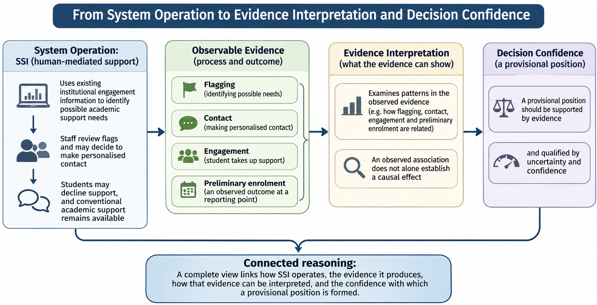
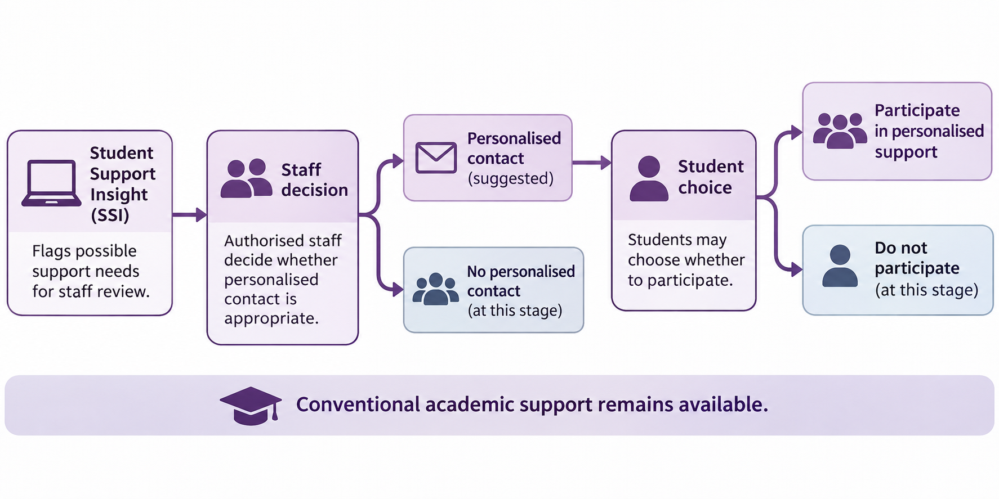
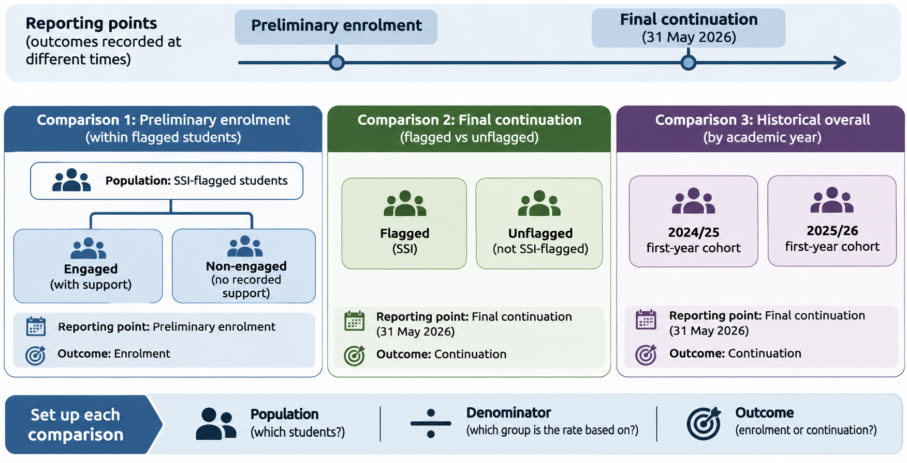
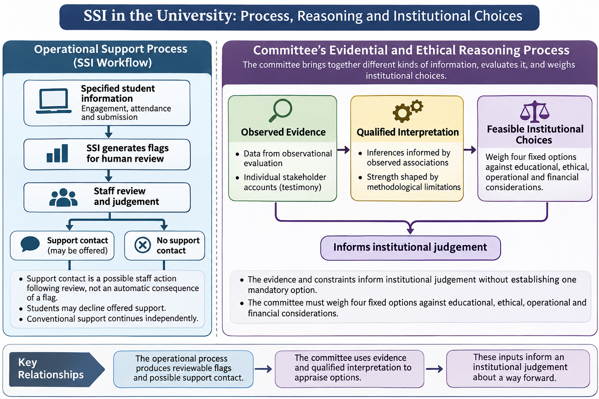
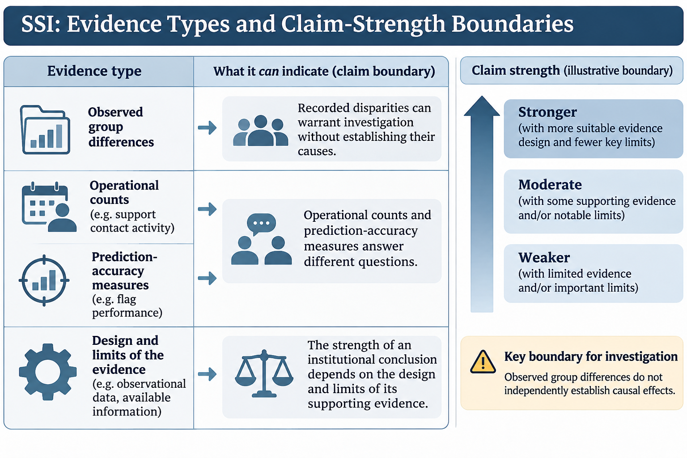

Figure 1. A quiet British university student support meeting room with a table, empty chairs, notebooks and an unopened folder labelled Student Support Insight.
A university introduces a new way of identifying students who might benefit from academic support. The early findings look promising. But what happens when further evidence raises difficult questions?
In this fictional case, you will follow Northbridge University as it considers the future of an AI-assisted student support initiative. You will interpret institutional findings, examine competing explanations, consider the experiences of students and staff, and recommend what the university should do next.
The challenge is not to understand how an AI system is built. It is to decide what evidence can justify, what remains uncertain and how an institution should act when different considerations point in different directions.
The journey takes approximately 90 minutes and can be completed independently in one day. You do not need specialist knowledge of AI, statistics or university management. Everything needed for the case is provided as you progress.
You will encounter the evidence in stages. At first, you will know only what the university knew when its initial evaluation appeared encouraging. Later experiences will introduce further findings and perspectives. Keep a note of your initial judgement and how confident you feel about it: you will return to both.
By the end, you should be able to distinguish findings from interpretations, assess limitations, weigh stakeholder consequences and justify a proportionate recommendation without pretending that all uncertainty has disappeared. There may be more than one defensible decision; what matters is the quality of your reasoning.
Draft not saved
The Promising Pilot
Overview
This self-study resource introduces a fictional university's AI-assisted student support initiative and its first evaluation. Begin by exploring how the system operates, then examine the preliminary evidence before recording your own judgement and confidence. The four activities take approximately 12 minutes and are designed to be completed in order.
Learning purpose
The first two activities establish the support pathway and the evidence needed for an informed interpretation. The final two activities use that interpretation to develop a provisional position, explain its limitations and communicate uncertainty to another audience. Your initial reasoning provides a point of comparison for later work in Reading the Evidence Carefully.
Knowledge summary
Northbridge University is a fictional public university in England. Like many universities, it wants to help students who may encounter academic difficulties, particularly during the transition into their first year. In September 2025, it introduced Student Support Insight (SSI), an AI-assisted initiative intended to help staff identify students who might benefit from timely academic support.
From information to support
SSI uses information already held by the university, including engagement with learning systems, attendance where available and assignment submission patterns. The system identifies possible support needs, but identification is not intervention. A support flag indicates that a student may benefit from attention; authorised staff review that indication and decide whether personalised contact is appropriate. A student who receives an offer can choose whether to participate in a support conversation. Conventional academic support remains available independently of SSI.
These distinctions matter because a system can identify more students than staff subsequently contact, and not everyone contacted will engage. A flag does not diagnose a student, determine academic ability, award grades or impose sanctions. Human judgement and student choice remain part of the pathway.
Understanding the evidence
An evaluation can report several different kinds of information. Process measures describe what happened along a support pathway, such as the number of students flagged, contacted or engaged. Outcome measures describe a subsequent condition, such as whether students are still enrolled at a particular reporting point. These measures answer different questions and should not be treated as interchangeable.
Percentages need careful reading because every percentage has a denominator: the group against which the count is measured. For example, if 30 out of 50 students participate in an unrelated workshop, the participation rate is 60% of that group. If two groups have different outcome rates, the absolute difference between their percentages is measured in percentage points. The groups and outcomes must be identified before that difference can be interpreted meaningfully.
A further distinction is between association and causation. An association describes a relationship observed in the available data. A causal claim goes further: it proposes that one event or intervention produced a change in another. When students choose whether to participate in support, those who engage may differ from those who do not for reasons unrelated to the support itself. A comparison of their outcomes does not automatically separate those possibilities.
Timing also matters. Being enrolled at a preliminary reporting point is not necessarily the same as continuing into a subsequent academic year. The wording of an outcome should match what was actually measured.
From evidence to judgement
Institutional decisions rarely depend on a single figure. The potential value of timely support must be considered alongside what an evaluation establishes and what remains uncertain. A provisional judgement is a reasoned position formed using the evidence currently available, with recognition that further evidence may justify reconsideration.
A judgement has two related but distinct dimensions: position, meaning what you currently favour, and confidence, meaning how securely the evidence supports that position. Someone can favour an initiative while having limited confidence in its demonstrated effectiveness, or remain undecided despite recognising encouraging observations. Neither position nor confidence should be treated as a substitute for reasons.
As you work through the activities, distinguish what the records report, what you infer from them and what remains unknown. Your task is not to discover a predetermined correct decision, but to develop an explanation whose strength matches the evidence.

Figure 1. Connect SSI's human-mediated support pathway to the interpretation of preliminary evidence and the formation of a qualified judgement.
The map begins with existing student engagement information contributing to SSI support flags. A flag leads to possible staff review and personalised contact, not automatic intervention. Students may choose whether to engage; conventional support remains independently available. The stages of flagging, contact and engagement connect to process measures, while preliminary enrolment is a separate outcome measure. Observed comparisons lead to interpretation and recognition of evidence limitations, not directly to a causal conclusion. Supporting reasons and uncertainty connect to a provisional position and the confidence placed in it.
Learning outcomes
By the end of this lesson, you should be able to:
Describe the purpose of Student Support Insight (SSI) and distinguish between a support flag, a personalised support contact and engagement in a support conversation. (LO1)
Interpret the preliminary evaluation findings by identifying the groups compared, explaining the 90% and 80% enrolment rates, and distinguishing the observed association from a demonstrated causal effect. (LO2)
Form and justify a provisional judgement about whether SSI appears worth continuing, using the preliminary evidence and acknowledging at least one relevant uncertainty. (LO3)
Express and justify a level of confidence in the provisional judgement, identifying how the strength and limitations of the available evidence influence that confidence. (LO4)
How SSI Offers Student Support
3 min
Establish the institutional context and construct an accurate mental model of the SSI support pathway.
Connect your learning
The central question in The Promising Pilot is whether encouraging early evidence makes an institutional initiative worth continuing. A sound judgement begins by distinguishing the technology's role from the actions of staff and students.
Northbridge University is a fictional public university in England. In September 2025, it introduced Student Support Insight (SSI) to help identify first-year students who might benefit from an academic support conversation. Before considering the early results, establish what the system actually does and what remains a human decision.
Follow the pathway from identifying a possible need to offering support and deciding whether to engage. Keep system-generated flags, staff decisions and student choices separate.
Explain why a flag, an offer of support and participation in a conversation represent different stages rather than three descriptions of the same event.
Explore the idea
Read the short institutional introduction and the explanation of SSI's support pathway.

Figure 2. Show where staff judgement and student choice separate identification, contact and participation.
Existing engagement information feeds into SSI, which may produce a support flag. The flag reaches authorised staff for review. Staff may decide to make personalised contact, but contact is not automatic. Where an offer is made, the student may choose to attend a support conversation or decline. The pathway therefore has two conditional transitions: staff judgement before contact and student choice before engagement. Conventional academic support remains available outside this pathway. No stage is presented as a diagnosis or sanction.
Understanding Student Support Insight
Northbridge University is a fictional public university in England. It is concerned that some first-year undergraduates leave before beginning their second year, sometimes without receiving academic support that might have helped them.
In September 2025, Northbridge introduced Student Support Insight (SSI), an AI-assisted system intended to identify students who might benefit from a support conversation. SSI uses existing learning-system engagement information, attendance records where available, and assignment submission patterns to generate possible support flags.
A flag is not a decision about a student. Authorised staff review it and decide whether personalised contact would be appropriate. Contact offers an opportunity for support; students may decline. A student counts as engaging with support only after attending at least one support conversation. Conventional academic support remains available independently of SSI.
SSI does not automatically diagnose difficulties, grade work, determine academic ability, decide academic outcomes or impose sanctions. Being flagged and participating in support are therefore different situations, separated by staff judgement and student choice.
A Flag Is Not an Offer of Support
Imagine that a fictional student, Alex, has recently shown an unusual change in learning-system activity. SSI generates a flag indicating that Alex might benefit from academic support.
That flag does not establish why Alex's activity has changed. Nor does it automatically send Alex a message. An authorised member of staff reviews the indication and considers whether personalised contact would be appropriate.
The important distinction is between information produced by the system and a decision made by a person. A flag can exist without a subsequent offer of support. Whether Alex eventually participates is a separate matter for the learner's own pathway account.
Your task
Revising against
Complete a three-stage account identifying what a support flag means, who decides whether to make personalised contact, and what counts as student engagement.
Your SSI Support Pathway
Explain briefly why being flagged does not necessarily mean that a student receives or accepts support.
Use the explanatory feedback to check whether your account distinguishes the system's role from human decisions.
What to produce
A concise, accurate three-stage account that distinguishes an SSI-generated indication of possible support need, a personalised offer made following staff review, and a student's attendance at a support conversation. The explanation should identify the roles of authorised staff and student choice without attributing automatic decisions, diagnoses or sanctions to SSI.
Your draft is saved on this device when possible. It is not submitted.
Interpret the March evaluation by identifying the relevant groups, calculating the difference between reported enrolment rates and distinguishing association from causation.
Connect your learning
You have distinguished a support flag from contact and engagement. That distinction is essential for interpreting the evaluation: the number of students identified is not the number contacted or the number who participated, and the reported enrolment comparison concerns particular groups within the support pathway.
Northbridge's first evaluation summary, dated 12 March 2026, describes encouraging preliminary results. Examine the reported figures carefully. Your task is to establish what was observed, identify the groups being compared and decide how strongly the figures support a claim about the benefit of engagement.
Identify the denominator for each percentage, compare like with like, and distinguish a difference observed in the data from an effect proven to have been caused by support.
Explain why a difference between the enrolment rates of students who engaged and students who did not engage cannot, by itself, show that engagement produced the difference.
Explore the idea
Reading Percentages and Evidence
A percentage expresses a count relative to a particular group. Before interpreting a percentage, ask: Out of which students? Two percentages can only be compared meaningfully when their group definitions and measured outcomes are understood.
The difference between two percentages is expressed in percentage points. For an unrelated example, a change from 40% to 55% is a difference of 15 percentage points. This is different from saying there has been a 15% relative increase.
An association means two observations occur together in the reported data. It does not, by itself, establish causation: that one event produced the other. Students who participate in support may differ from those who do not in ways the figures do not describe.
Finally, being enrolled at a preliminary reporting point is not the same as having completed the academic year or continued into the next year. Interpret the outcome that was actually measured.
Your task
Revising against
Inspect the March 2026 evaluation extract and its numerical table.
NB-SSI-01: Initial Evaluation Summary
Northbridge University — NB-SSI-01
Initial Evaluation Summary, 12 March 2026
Recorded measure
Student count
Relevant group or denominator
Reported rate
Students flagged by SSI
500
All SSI-flagged students
—
Students receiving recorded personalised support contact
400
SSI-flagged students
—
Contacted students attending at least one support conversation
240
Students receiving recorded personalised contact
—
Engaged flagged students still enrolled at the preliminary reporting point
216
240 flagged students who engaged
90%
Non-engaged flagged students still enrolled at the preliminary reporting point
208
260 flagged students who did not engage
80%
Outcome recorded: enrolment status at the preliminary reporting point. These figures are not final continuation outcomes.
Use the counts, group definitions and reported rates to complete your own interpretation. Keep the stages of the support pathway distinct.
Identify the numbers of flagged, contacted and engaged students and distinguish these stages.
Identify the two groups used for the preliminary enrolment comparison and establish the proportion still enrolled in each.
Calculate the difference in percentage points and describe what the comparison shows.
Write one sentence explaining what the figures do not establish about causation or final continuation.
What to produce
A completed evidence-interpretation workspace that correctly identifies the stages of the support pathway, uses the relevant group totals as denominators, establishes and compares the preliminary enrolment rates, and accurately expresses their difference in percentage points. The accompanying explanation must distinguish the observed association from a demonstrated causal effect and avoid presenting preliminary enrolment as final continuation.
Your draft is saved on this device when possible. It is not submitted.
Identify the two groups used for the preliminary enrolment comparison and establish the proportion still enrolled in each.
Calculate the difference in percentage points and describe what the comparison shows.
Write one sentence explaining what the figures do not establish about causation or final continuation.
Have you separated the observed association from causal and final-continuation claims?
Show guidance for criterion 4
Why this matters
A comparison at one preliminary reporting point cannot establish either the effect of support or students' eventual continuation.
What to look for
A. The interpretation describes a difference in observed preliminary enrolment rather than a proven effect of SSI.
B. The outcome is identified as preliminary enrolment rather than final continuation.
C. At least one plausible source of uncertainty about the comparison is acknowledged.
If something is missing
Missing A: Replace wording such as 'SSI caused' with an observation about the reported groups, and identify why the comparison alone cannot establish causation.
Missing B: Locate any statement about final retention or second-year progression and restrict it to the reporting-point outcome actually recorded.
Missing C: Consider whether students choosing to engage might differ from those not engaging, and explain how such differences could affect interpretation.
Move from evidence interpretation to a defensible provisional position on whether SSI appears worth continuing while further evidence is collected.
Connect your learning
Your interpretation of the March figures provides a factual basis for judgement. The challenge is to move from describing an encouraging association to deciding what action that limited evidence can reasonably support, without treating uncertainty as either proof of success or proof of failure.
You have seen why Northbridge introduced SSI and what its first evaluation appears to show. Now make a provisional decision: on the evidence currently available, does SSI appear worth continuing while more evidence is collected? There is no prescribed position. What matters is how well your reasons match the evidence.
Consider the potential educational value of timely support, what the preliminary findings indicate, and what remains uncertain. A provisional decision can be justified without claiming certainty.
Which part of the available evidence most influences your position, and which uncertainty most limits the conclusion you can draw?
Explore the idea
March Evidence for Your Provisional Decision
NB-SSI-01 — Initial Evaluation Summary
Northbridge University, 12 March 2026
Recorded measure
Count
Group or denominator
Reported preliminary rate
Students flagged by SSI
500
All flagged students
—
Students receiving recorded personalised contact
400
Flagged students
—
Students attending at least one support conversation
240
Contacted students
—
Engaged flagged students still enrolled at the preliminary reporting point
216
240 engaged flagged students
90%
Non-engaged flagged students still enrolled at the preliminary reporting point
208
260 non-engaged flagged students
80%
The enrolment rates refer to the preliminary reporting point, not final continuation. This record supplies the available March evaluation figures for your initial judgement.
Weighing a Decision with Limited Evidence
Northbridge introduced SSI because it wanted to identify possible academic support needs early enough for staff to offer help. Continuing the initiative could preserve that opportunity, but the educational purpose alone does not establish that the system achieves it.
The March record provides information about how far students progressed through the support pathway and how preliminary enrolment differed between students who engaged and those who did not. Those observations are relevant to deciding whether the initiative merits further attention. However, the record does not isolate the effect of SSI or establish final continuation outcomes. Students who chose to participate may have differed from those who did not, independently of the support received.
The judgement therefore involves a genuine trade-off. Giving weight to the possibility of timely support may favour continued operation while further evidence is gathered. Giving greater weight to uncertainty about actual benefit may favour withholding support for continuation or remaining undecided. Neither direction follows automatically from the figures.
A defensible provisional judgement identifies which consideration carries more weight for now, links that weighting to the recorded evidence and explains what the evidence cannot settle. The appropriate conclusion at this stage is an initial position with an explicit limitation, not a definitive institutional recommendation.
Your task
Revising against
Reinspect the March evaluation evidence.
Record Your Provisional Judgement
State whether you currently favour continuing SSI while gathering more evidence, do not favour continuing on the present evidence, or remain undecided.
Give at least one specific reason grounded in the evaluation or SSI's stated educational purpose.
Identify at least one uncertainty that limits how strongly the evidence supports your position.
Explain briefly why your reasons justify your provisional position rather than a definitive conclusion.
What to produce
A clear provisional position supported by at least one accurate and relevant piece of March evaluation evidence or institutional-purpose reasoning, together with an explicitly identified evidential limitation. The justification should connect the evidence to the chosen position without asserting a causal benefit, assuming future outcomes or treating any particular continuation position as correct.
Your draft is saved on this device when possible. It is not submitted.
Record your response for My provisional position.
Record your response for Evidence supporting my position.
Record your response for An important uncertainty.
Record your response for Why my judgement is provisional.
Calibrate confidence in the provisional judgement and transfer evidence-sensitive reasoning to an explanation for a first-year student.
Connect your learning
Your provisional judgement now has supporting reasons and an acknowledged limitation. Evaluating confidence adds a further dimension: you must decide not only what you currently think, but how strongly the available evidence warrants that position. Communicating that distinction is important when others may act on a judgement.
A reasoned position is not the same as certainty. Consider how confident you are in your provisional judgement and why. You will also apply the same distinction between a position and its evidential support to a short communication task for a different audience.
Separate the direction of your judgement from the strength of your confidence. Calibrate confidence to the preliminary evidence rather than to how attractive or important the initiative's objective seems.
What makes your judgement more or less secure? How would you explain that uncertainty to someone who has not studied the evaluation?
Explore the idea
Position and Confidence Are Different
Your position expresses what you currently think Northbridge should do about SSI. Your confidence expresses how securely the available evidence supports that position. These are separate judgements.
For example, someone might provisionally favour continuing an initiative while having low confidence that it is effective. Another person might remain undecided because the available evidence supports competing interpretations. Neither position automatically determines a confidence level.
Use low, moderate or high to describe your confidence. When choosing, weigh what the reported evidence allows you to say against what remains uncertain. A clear difference in recorded outcomes can be relevant, while uncertainty about why that difference exists may limit confidence in an explanation of the initiative's effect.
Confidence is not a measure of how strongly you value student support. It is a judgement about how far the evidence warrants the conclusion you are making. Your explanation should make that relationship visible.
Your task
Revising against
Revisit the provisional position and reasons you have just recorded.
Record Your Confidence and Student Explanation
State your confidence as low, moderate or high and justify that level using both a supporting feature of the evidence and a limitation.
Evidence Card: Confidence and Communication
Card 1
Northbridge University — NB-SSI-01
Initial Evaluation Summary, 12 March 2026
Flagged student group
Still enrolled at the preliminary reporting point
Group total
Reported rate
Students who engaged with support
216
240
90%
Students who did not engage with support
208
260
80%
Institutional context: SSI identifies possible academic support needs for review by authorised staff. Staff decide whether personalised contact is appropriate. Students can decline support, and engagement means attending at least one support conversation.
Outcome boundary: The figures record enrolment at a preliminary reporting point. Final continuation outcomes are not established by this record.
Use these particulars to consider the strength of your confidence and to prepare an accurate explanation for a first-year student.
Review both responses against the diagnostic criteria.
Retain your position, reasons and confidence so that you can revisit them when examining the evidence more closely in Reading the Evidence Carefully.
What to produce
An explicit confidence level accompanied by a concise explanation connecting the strength of the preliminary findings and their limitations to that level. A separate short explanation for a student audience should communicate the difference between an encouraging observation and a proven causal benefit without introducing unsupported facts. The learner's initial position, reasons and confidence should remain identifiable for later reconsideration.
Your draft is saved on this device when possible. It is not submitted.
Record your response for My confidence level.
Record your response for Evidence that supports my confidence.
Record your response for What limits my confidence.
Record your response for Explanation for a first-year student.
Does your student-facing explanation accurately communicate what is observed and what remains unknown?
Show guidance for criterion 4
Why this matters
A student could mistake an encouraging preliminary comparison for established effectiveness if the explanation collapses observation, causation and final outcomes.
What to look for
A. The explanation communicates the observed group comparison without claiming that SSI caused it.
B. Preliminary enrolment is not presented as final continuation.
C. The explanation addresses the student's question directly in accessible language.
If something is missing
Missing A: Identify any causal wording and distinguish the recorded association from a demonstrated effect of the initiative.
Missing B: Replace any claim about eventual continuation with wording that identifies the preliminary reporting point.
Missing C: Remove unnecessary technical wording and make the distinction between current evidence and unresolved questions understandable without specialist knowledge.
> "Does the university already know that SSI works?"
Write two or three sentences answering the student in accessible language. Use the March evaluation evidence to distinguish the observed difference between the groups from proof that SSI caused it. Also distinguish preliminary enrolment from final continuation.
Your purpose is to help the student understand what the university currently knows and does not know, not to persuade them to agree with your own position on continuing SSI.
Write your response in Explanation for a first-year student in the confidence workspace.
Your draft is saved on this device when possible. It is not submitted.
Reading the Evidence Carefully
A promising finding, but what does it show?
Northbridge University is a fictional public university in England. In September 2025, it introduced Student Support Insight (SSI), an AI-assisted system intended to help staff identify first-year students who might benefit from additional academic support. SSI uses existing information about engagement with university learning systems, attendance where available and assignment submission patterns to generate support flags. Authorised staff review those flags and decide whether to offer support. Students may decline, and conventional academic support remains available. SSI does not diagnose students, award grades or automatically impose sanctions.
The university hoped that earlier conversations with students could help more of them remain on their courses. Its initial evaluation summary, NB-SSI-01, dated 12 March 2026, reported an encouraging difference. Among students flagged by SSI, 90% of those who engaged with support were still enrolled at the preliminary reporting point, compared with 80% of those who did not engage.
That difference invites a positive interpretation. It might suggest that support is reaching students in a useful way. But there is a difference between saying that students who engaged had a higher enrolment rate and saying that engagement caused the higher rate. The first statement describes what the evaluation recorded. The second offers an explanation for why it happened.
If you completed The Promising Pilot, revisit your initial judgement about SSI, the reasons you gave and how confident you felt. Keep that judgement in mind as you examine which reasons follow directly from the preliminary evidence and which depend on assumptions. You do not need to decide immediately whether your earlier position was right or wrong. The purpose is to make its evidential basis clearer.
The question throughout this resource is not whether encouraging evidence should be trusted or dismissed. It is how much that evidence can reasonably tell us. A finding can be accurate, relevant and promising while still leaving important questions unanswered.
Reading the numbers: who is being counted?
A percentage is meaningful only when you know what is being counted and what total it is being compared with. The number being counted is the numerator. The relevant total is the denominator. A percentage expresses the numerator as a proportion of that denominator, multiplied by 100.
Northbridge's preliminary summary begins with 500 students flagged by SSI. A flag was an advisory indication that a student might benefit from support; it did not mean that the student had already received any. Of those 500 students, 400 received recorded personalised support contact. In this evaluation, contact meant a recorded personalised offer of academic support following a flag. Of the 400 contacted students, 240 attended at least one support conversation. This attendance was the evaluation's definition of support engagement.
The distinction between these stages matters. Being flagged, being contacted and engaging are three different recorded events. The 240 engaged students represent 60% of the 400 contacted students: 240 divided by 400, multiplied by 100. The same 240 students represent 48% of the 500 flagged students. Neither percentage is inherently wrong; each answers a different question because it uses a different denominator.
The preliminary enrolment comparison divides the 500 flagged students into two groups. The first contains the 240 students who engaged with support. Of these, 216 were still enrolled at the preliminary reporting point. Dividing 216 by 240 gives 0.90, or 90%.
The second group contains the 260 flagged students who did not engage. This group includes students who did not have a recorded engagement, whether or not they had received contact. Of those 260 students, 208 were still enrolled at the same preliminary reporting point. Dividing 208 by 260 gives 0.80, or 80%.
Notice that the number still enrolled was 216 in the engaged group and 208 in the non-engaged group. Comparing these counts alone could be misleading because the groups were not the same size. Rates allow us to compare the proportion remaining enrolled within each group.
Subtracting 80% from 90% gives a difference of ten percentage points. A percentage-point difference is the direct subtraction of two percentages. It is not the same as saying that enrolment increased by ten per cent relative to the lower rate, and it does not tell us what caused the difference.
The comparison is also narrower than a statement about all students at Northbridge. Both groups consist of students who were flagged by SSI. The 90% figure does not describe every flagged student, and neither rate represents the university's entire first-year population.
A careful numerical description therefore identifies four things together: the population being considered, the groups being compared, the outcome being measured and the point in time when it was measured. Here, the finding concerns preliminary enrolment among flagged students grouped according to recorded support engagement.
The preliminary evaluation follows students from an SSI support flag through recorded contact and engagement. It then compares preliminary enrolment rates for two groups within the flagged population. The tables separate these stages so that each count and percentage has a clear meaning.
Support pathway
Title
From support flag to support engagement
Stage
Count
Meaning
Flagged by SSI
500
Students identified by the advisory system as potentially benefiting from additional academic support.
Received support contact
400
Flagged students who received a recorded personalised offer of academic support.
Engaged with support
240
Contacted students who attended at least one support conversation.
Interpretation
The stages are not interchangeable. All 240 students recorded as engaging were among the 400 contacted students and the 500 flagged students. Contact does not necessarily lead to engagement.
Denominator examples
Question
Numerator
Denominator
Calculation
Result
Interpretation
What percentage of contacted students engaged?
240
400
240 ÷ 400 × 100
60%
60% of the students who received recorded support contact engaged in at least one support conversation.
What percentage of all flagged students engaged?
240
500
240 ÷ 500 × 100
48%
48% of all SSI-flagged students engaged in at least one support conversation.
Enrolment comparison
Title
Preliminary enrolment among SSI-flagged students
Subtitle
Both groups belong to the same population of 500 flagged students. The outcome is whether students were still enrolled at the preliminary reporting point.
Group
Group size
Still enrolled
Rate
Engaged with support
240
216
90%
Did not engage with support
260
208
80%
Group definition note
The 260 students who did not engage include flagged students with no recorded engagement, whether or not they received recorded support contact. They must not be described simply as students who were never contacted.
Worked calculations
Group
Calculation
Explanation
Engaged with support
216 ÷ 240 × 100 = 90%
Of the 240 flagged students who engaged, 216 were still enrolled at the preliminary reporting point.
Did not engage with support
208 ÷ 260 × 100 = 80%
Of the 260 flagged students who did not engage, 208 were still enrolled at the same preliminary reporting point.
Observed difference
Calculation
90% − 80% = 10 percentage points
Result
10 percentage points
Interpretation
The preliminary enrolment rate was ten percentage points higher in the engaged group than in the non-engaged group.
Qualification
This is an observed difference between groups. It does not establish that support engagement caused the difference.
Reading guidance
Read the support pathway first, then the enrolment comparison. In the comparison, read each row from the group name through its denominator, numerator and rate. The percentages describe proportions within different-sized groups, so the raw counts of 216 and 208 should not be compared without their denominators.
Scope note
These are provisional enrolment indicators from NB-SSI-01, not final continuation outcomes. The comparison concerns engagement among SSI-flagged students, not all first-year students at Northbridge University.
Northbridge's preliminary evaluation recorded 500 SSI-flagged students. Of these, 400 received recorded personalised support contact, and 240 attended at least one support conversation. Engagement therefore represented 60% of contacted students and 48% of all flagged students. Among the 240 engaged students, 216, or 90%, were still enrolled at the preliminary reporting point. Among the 260 flagged students who did not engage, 208, or 80%, were still enrolled. The observed difference was ten percentage points. The comparison does not establish that engagement caused the difference.
From an observed difference to a causal claim
We now know precisely what the figures describe. Among SSI-flagged students, those who engaged with support had a higher preliminary enrolment rate than those who did not. That is an observation: a description of what was recorded.
The finding also shows an association. An association exists when two measured characteristics occur together in a pattern. Here, engagement status and preliminary enrolment status are associated: the group recorded as engaging had a higher proportion still enrolled. Association describes a relationship in the data. It does not, on its own, explain why the relationship exists.
Causation is a stronger claim. To say that engagement caused higher enrolment is to say that engaging with support made a difference to whether students remained enrolled. That is a possible explanation, but the observed percentages do not establish it.
Imagine one of the 240 students who engaged with support. We know that this student attended at least one conversation. What we cannot directly observe is what would have happened to that same student, under otherwise comparable circumstances, if they had not engaged. That unobserved alternative is called a counterfactual. Causal reasoning asks whether the outcome would have been different under that alternative condition.
It may seem that the 260 non-engaged flagged students provide the answer. But they are different people, not the same students experiencing an alternative version of events. Their circumstances, motivations and existing sources of help might differ. Without addressing those possible differences, the outcome for the non-engaged group cannot simply be treated as what would have happened to the engaged group without support.
Compare three ways of describing the finding. 'Ninety per cent of engaged flagged students and eighty per cent of non-engaged flagged students were still enrolled at the preliminary reporting point' is a direct observation. 'The higher enrolment rate among engaged students is consistent with the possibility that support was beneficial' is a cautious interpretation. 'Engaging with support increased enrolment by ten percentage points' asserts a causal effect that these figures have not established.
The university's preliminary summary described the difference as encouraging and recommended continuing the pilot while collecting more evidence. That recommendation is a judgement about what to do with the available information. It should not be confused with a further measurement or proof of causation.
Uncertainty about causation does not make the observed association disappear. The figures may point towards a useful intervention. Equally, the difference may have other explanations. A defensible reading keeps both possibilities in view rather than moving directly from a promising pattern to a certain explanation.
Three claims about the same finding
Introduction
The same preliminary figures can support statements of different strengths. The distinction is not whether a statement sounds positive or negative, but whether its wording goes beyond what was observed.
Comparison
Claim type
Statement
Evidential status
Direct observation
Among SSI-flagged students, 90% of those who engaged with support and 80% of those who did not engage were still enrolled at the preliminary reporting point.
Supported by the recorded preliminary figures. It identifies the comparison groups, the observed rates and the reporting point.
Cautious interpretation
The ten-percentage-point difference in preliminary enrolment rates between engaged and non-engaged flagged students is encouraging and consistent with the possibility that support was beneficial.
A reasonable interpretation, provided that possible benefit is not treated as established causation. Other explanations remain possible.
Unsupported causal assertion
Support engagement caused the ten-percentage-point difference in preliminary enrolment rates between the two groups of flagged students.
Not established by the preliminary comparison. The groups were not randomly assigned, and other differences between students could have contributed to the observed pattern.
Conceptual distinctions
Concept
Meaning
Observation
A statement about what was recorded or measured.
Association
A pattern in which two measured characteristics vary together. Here, recorded engagement status is associated with preliminary enrolment status.
Causation
A claim that one factor produced a change in an outcome. Establishing this requires more than observing that two groups have different outcomes.
Evaluative opinion
A judgement about the significance or implications of the evidence, such as describing the finding as encouraging. It should be distinguished from the recorded result itself.
Why the claims differ
The first statement stays within the recorded evidence. The second adds an interpretation but signals that benefit is possible rather than proven. The third moves from association to causation without establishing that the engaged and non-engaged groups were otherwise comparable. Because the students were not randomly assigned to engage, differences in motivation, circumstances or existing support could have influenced both engagement and enrolment.
Important qualification
Rejecting the unsupported causal assertion does not mean rejecting the observed positive association. The preliminary result remains potentially informative even though its cause is uncertain.
A direct observation reports that 90% of engaged flagged students and 80% of non-engaged flagged students were still enrolled at the preliminary reporting point. A cautious interpretation describes this ten-percentage-point difference as encouraging and consistent with possible benefit. An unsupported causal assertion says that engagement caused the difference. The causal assertion exceeds the evidence because students were not randomly assigned to the groups and plausible alternative explanations remain.
Why else might the groups differ?
Why might students who engaged with support have been more likely to remain enrolled even if engagement was not the only reason? The answer begins with how the two groups were formed.
The students were not randomly assigned to engage or not engage. Instead, engagement depended on whether students attended a support conversation after contact. This means that group membership could be related to other characteristics of the students. When those characteristics also influence the measured outcome, they can produce what is called a selection effect.
Consider a hypothetical explanation. Some students may have been especially motivated to resolve academic difficulties. That motivation could make them more likely to attend a support conversation when contacted. It could also make them more likely to remain enrolled because they were already taking steps to address difficulties, regardless of the particular conversation recorded by the evaluation.
The reasoning has two parts. First, a possible characteristic influences whether someone enters the engaged group. Second, the same characteristic could influence whether that person remains enrolled. If both pathways exist, some of the observed difference between groups might reflect that characteristic rather than the effect of support engagement itself.
This is not a claim that Northbridge measured student motivation or found it to explain the result. It is a plausible alternative explanation constructed to test the strength of a causal interpretation. Other possibilities could involve students' personal circumstances or the support already available to them. The preliminary summary does not provide enough information to establish which explanation, or combination of explanations, accounts for the observed difference.
There is also no need to choose between 'support helped' and 'the groups were different' as if only one could be true. Support conversations might genuinely benefit some students, while differences in motivation or circumstances also contribute to the observed pattern. The figures alone cannot tell us how much of the difference, if any, should be attributed to engagement.
This is why a credible alternative explanation must do more than name a vague possibility. It should identify a characteristic that could differ between groups and explain how that characteristic might influence both engagement and enrolment. The explanation need not be proven to show why a stronger causal claim is not yet justified. But it must remain clearly hypothetical until supported by evidence.
The 90% versus 80% result is therefore compatible with more than one account of what happened. Recognising that plurality is part of careful interpretation, not a reason to disregard the finding.
How a selection effect could contribute to the difference
Imagine that some flagged students were already more motivated to address academic difficulties than others. That motivation could make them more likely to attend a support conversation. It could independently make them more likely to remain enrolled. Because the same possible characteristic influences both engagement and enrolment, some of the observed difference between groups might reflect selection rather than the effect of engagement alone. This is a hypothetical explanation, not a measured Northbridge finding. Support could still have been beneficial.
Figure 1. A possible pre-existing characteristic could influence both support engagement and preliminary enrolment, complicating causal interpretation of the observed difference.
The diagram contains three labelled nodes. On the left is 'Possible pre-existing motivation to address academic difficulties', marked as hypothetical. Two separate arrows lead from this node. The upper arrow, labelled 'Might influence engagement', points to 'Recorded support engagement'. The lower arrow, labelled 'Might influence remaining enrolled', points to 'Preliminary enrolment'. Both arrows are explicitly hypothetical. There is no causal arrow between engagement and enrolment. A note explains that the pathways illustrate a possible selection effect rather than a finding established by Northbridge. The figure demonstrates how one possible student characteristic could influence both membership of the engaged group and the measured outcome, leaving the cause of the observed association uncertain.
What was measured, and what remains unknown?
So far, we have considered whether the difference between the two groups was caused by support engagement. A separate question is whether the recorded measures tell us everything we might want to know about support and student success.
The evaluation defines support engagement as attendance at least once at a support conversation. This is an operational definition: a practical rule for deciding what will count as evidence of a broader concept. It allows the university to count engagement consistently. But it also sets a boundary around what the count means.
A student who attended one conversation meets the definition of engagement. The figure does not tell us whether the conversation lasted a short or long time, whether the advice was useful, whether the student acted on it or whether their circumstances improved. Those possibilities are not interchangeable with the recorded fact of attendance.
Similarly, support contact means a recorded personalised offer of academic support. It does not mean that the student accepted the offer or received an effective intervention. The distinction between 400 contacted students and 240 engaged students reflects that difference in what was recorded.
The enrolment outcome also has a specific meaning. The preliminary summary reports whether students were still enrolled at its reporting point. That is not the same as establishing that they continued into the following academic year. Nor does remaining enrolled tell us everything about how a student is learning or feeling. A student can be enrolled while experiencing difficulties, and a count of enrolled students does not directly measure confidence, wellbeing, satisfaction or educational achievement.
These are measurement limitations. They do not imply that the university's recorded figures are necessarily inaccurate. Instead, they tell us which questions the figures answer and which questions require different or additional evidence.
Incomplete information introduces a related difficulty. To understand why the engagement groups differed, we might want to know more about their circumstances and existing sources of support. To understand the value of a support conversation, we might want evidence beyond whether it occurred. The preliminary summary does not establish those wider matters.
An accurate statement therefore stays close to the measurement: 'Students recorded as engaging were more likely to be still enrolled at the preliminary reporting point.' A broader statement such as 'Students who engaged were more successful because SSI improved their learning and wellbeing' makes several additional claims that the available measures cannot support.
Careful interpretation does not demand that one dataset answer every question. It requires recognising the questions it can answer reliably, the questions it cannot resolve and the additional assumptions hidden in stronger claims.
Making a judgement that fits the evidence
We can now bring the pieces together. The preliminary Northbridge evidence records a clear difference: among the 500 students flagged by SSI, 216 of 240 who engaged with support (90%) were still enrolled at the preliminary reporting point, compared with 208 of 260 who did not engage (80%). The observed difference is ten percentage points.
That statement is specific about the groups, the outcome and the reporting point. It is also informative. The higher enrolment rate among engaged students is consistent with the possibility that support conversations were beneficial. It gives the university a reason to take the pilot seriously and investigate further.
The same evidence does not establish that engagement produced the difference. Students were not randomly assigned to the two groups. They may have differed in characteristics that influenced both engagement and enrolment. The available information does not exclude those alternative explanations. Engagement also records attendance at least once, while the outcome records preliminary enrolment rather than final continuation or broader educational experience.
Consider the claim: 'SSI increased student retention by ten percentage points.' It moves beyond the evidence in several ways. It attributes a causal effect to SSI, treats the observed difference as an improvement produced by the system and uses a broader outcome description than the preliminary measure warrants.
A more proportionate interpretation would be: 'In Northbridge's preliminary evaluation, SSI-flagged students who engaged with support had a higher enrolment rate at the reporting point than flagged students who did not engage, 90% compared with 80%. This is encouraging and consistent with possible benefit, but it does not establish that support engagement caused the difference. Other characteristics of the students may have contributed, and the figures do not describe final continuation or the wider quality of their educational experience.'
This interpretation is not weaker because it contains qualifications. It is stronger as reasoning because each part is matched to what the evidence can support. The observed difference is retained, the possible benefit is acknowledged, and uncertainty is located precisely rather than expressed as a vague doubt about everything.
Confidence can also be more carefully calibrated. You might have substantial confidence that the preliminary summary reports a 90% versus 80% association, while having less confidence that engagement caused that difference. You might consider the finding promising without being ready to conclude how effective SSI is. These positions are compatible because they concern different claims.
Think again about the reasons behind the provisional judgement you brought from The Promising Pilot. If a reason depended on the observed difference, that evidence remains relevant. If it depended on treating the difference as proof of a causal effect, that part of the reasoning needs qualification. Your overall judgement may change, become more tentative or remain broadly similar for more carefully stated reasons. No particular response follows automatically from the preliminary figures.
Evidence-informed judgement involves making the strongest claim the evidence warrants, not the strongest claim that sounds persuasive. In this case, the finding is promising but provisional; the association is observed, while its explanation remains uncertain. That combination is the foundation for reading further evidence without either dismissing early positive results or allowing them to settle the matter prematurely.
In When the Evidence Changes, you will use these distinctions to consider additional findings and examine whether they support, challenge or qualify your initial interpretation. The aim is not to defend a first impression at all costs, but to keep the relationship between evidence, explanation and confidence clear as the available picture develops.
Draft not saved
When the Evidence Changes
Overview
This self-study resource continues the Northbridge University Student Support Insight case. Begin with the comparison of preliminary and final findings, then examine operational evidence and student accounts. Use your completed comparisons to develop a qualified synthesis before revisiting your earlier judgement and confidence. The four activities are designed to be completed in order, but you can return to earlier evidence whenever you need to.
Learning purpose
The sequence separates four connected stages of judgement: establishing what the records show, assessing the weight of different sources, reconciling apparently conflicting findings, and reconsidering a provisional position. Each stage includes a response workspace and diagnostic review. The final activity also asks you to communicate an evidence-based distinction to a student audience. You are not being asked to make the university's final policy decision.
Knowledge summary
Northbridge University introduced Student Support Insight (SSI) in September 2025 as an AI-assisted, staff-reviewed process for identifying first-year students who might benefit from academic support. SSI flags do not diagnose students, determine grades or impose sanctions. Students can decline support, and conventional routes to support remain available.
The Student Success Committee is considering evidence about the system. Earlier in the case, The Promising Pilot introduced preliminary findings and invited a provisional judgement. Reading the Evidence Carefully examined how to interpret that evidence. This resource introduces later records, operational observations and selected student experiences. Your task is to examine how additional evidence affects the strength, scope and confidence of an interpretation.
Comparing evidence fairly
A comparison is meaningful only when you know who is counted, what is measured and when it is measured. A numerator identifies the number meeting an outcome; a denominator identifies the group from which that number comes. A percentage without its denominator can conceal an important difference in population. Similarly, preliminary enrolment and final continuation refer to different reporting points. A historical comparison involves students from different academic years, not necessarily otherwise equivalent groups.
A percentage-point difference is the arithmetic difference between two percentages. It is not the same as a relative percentage change. For example, rates of 60% and 65% differ by five percentage points. That calculation describes a difference; it does not explain why the difference arose.
Association, causation and alternative explanations
An association means that two recorded characteristics or outcomes occur together in a particular pattern. A causal claim goes further: it asserts that one factor produced a change in another. Students who choose to engage with support may differ from students who do not in motivation, circumstances or existing support networks. These differences are examples of possible selection effects. Changes occurring at the same time as SSI may also affect outcomes. Such possibilities matter when evaluating causal claims, although identifying a plausible explanation does not demonstrate that it actually caused an outcome.
An evaluation limitation identifies a boundary on what a source can establish. Relevant boundaries include incomplete records, non-equivalent comparison groups, limited outcome measures and the absence of a suitable comparison with alternative support provision. Limitations need not make evidence worthless; they determine which claims remain defensible.
Weighing different kinds of evidence
Quantitative records can establish counts, rates and observed differences within defined populations. Operational records can illuminate whether a process reached students, relied on complete information or required additional staff effort. Individual accounts can reveal experiences that aggregate measures do not describe. These sources address related but different questions.
A selected group is not automatically representative of the wider student population. Similarly, an individual statement may be valuable evidence of one person's experience without establishing how frequently that experience occurs. False positives and false negatives concern whether a system incorrectly identifies or fails to identify cases against an appropriate reference standard. Neither an observed flag-rate difference between groups nor a selected set of students seeking support is, on its own, a reliable measure of overall classification error.
An observed difference between groups may warrant further investigation into fairness, support needs and outcomes. However, the difference alone does not establish discriminatory treatment, unequal identification accuracy or the cause of the pattern.
Synthesising evidence and calibrating confidence
Evidence synthesis involves more than adding up favourable and unfavourable findings. It asks whether apparently conflicting observations concern the same populations, outcomes, reporting points or kinds of evidence. Two findings may coexist because they answer different questions. A defensible synthesis identifies what is directly supported, what remains plausible but untested, and what additional evidence would help resolve uncertainty.
Your interpretation is what you currently judge the evidence to mean. Your confidence is how securely you hold that interpretation given the quality, completeness and limitations of the evidence. These judgements should be considered separately: an interpretation can remain unchanged while confidence rises or falls, and a changed interpretation is not automatically a better one. The aim is to make the reasoning behind either change or continuity inspectable.
Figure 1. How evidence types, limitations and alternative explanations inform a qualified interpretation and confidence.
Three evidence-source categories are shown: quantitative outcome records, operational observations and individual accounts. Outcome records connect to populations, denominators, outcomes and reporting points; operational observations connect to completeness, reach and workload; individual accounts connect to reported experiences and limits on representativeness. These checks inform the scope of warranted inferences. A separate distinction identifies association as insufficient to establish causation. Alternative explanations and unresolved questions feed into qualified synthesis. Interpretation and confidence appear as separate, related judgements rather than a single automatic result.
Learning outcomes
By the end of this lesson, you should be able to:
Compare the preliminary enrolment findings and final continuation data for Northbridge University's Student Support Insight initiative, distinguishing observed associations from causal claims and explaining how reporting points, comparison groups and alternative explanations limit the conclusions that can be drawn. (LO1)
Evaluate the significance and limitations of quantitative operational findings and selected qualitative accounts, distinguishing evidence of possible educational benefit, implementation difficulties and equity concerns from conclusions that the available evidence cannot establish. (LO2)
Synthesise apparently conflicting findings into a balanced interpretation of SSI, explaining how differences in populations, measures, evidence sources and plausible alternative explanations affect the weight assigned to each finding. (LO3)
Reassess an earlier provisional judgement about SSI and justify whether that judgement and the confidence attached to it should change, remain or become more qualified, explicitly relating the revised position to the relative strength of the new evidence and unresolved uncertainties. (LO4)
Compare the Continuation Findings
Establish an accurate understanding of the new continuation evidence and the limitations of comparisons across groups, reporting points and historical cohorts.
Connect your learning
The initial evaluation suggested an encouraging relationship between support engagement and enrolment. This activity examines whether that interpretation remains proportionate when final continuation results and evaluation limitations become available.
If you completed 'The Promising Pilot', revisit your provisional judgement and confidence. Draw also on the distinction between association and causation explored in 'Reading the Evidence Carefully'. Use these as starting points for examining newly available evidence, rather than assuming your earlier interpretation was right or wrong.
Compare like with like before drawing conclusions. Identify the population, denominator, outcome definition and reporting point for each finding. Distinguish what the figures show from what they cannot establish.
Which comparison most affects your interpretation of the earlier positive evaluation, and what can that comparison legitimately establish?
Your task
Revising against
Inspect the preliminary evaluation, final continuation records and evaluation limitations note.
Preliminary Enrolment and Final Continuation Records
NB-SSI-01 — Initial Evaluation Summary
Northbridge University | 12 March 2026 | Fictional institutional record
Student Support Insight (SSI) is an AI-assisted, staff-reviewed process for identifying first-year students who may benefit from academic support.
Recorded support activity
Measure
Students
First-year students flagged by SSI
500
Flagged students receiving recorded personalised support contact
400
Flagged students engaging in at least one support conversation
240
Preliminary enrolment
Flagged student group
Enrolled at preliminary reporting point
Group total
Reported percentage
Engaged with support
216
240
90.0%
Did not engage with support
208
260
80.0%
These figures concern enrolment at the preliminary reporting point, not final continuation. The recorded group difference is an association; the record does not establish that SSI or engagement caused it.
NB-SSI-02 — Final Continuation Data
Northbridge University | 5 June 2026 | Continuation cut-off: 31 May 2026 | Fictional institutional record
Final continuation among flagged students
Flagged student group
Continued
Group total
Reported percentage
Engaged with support
211
240
87.9%
Did not engage with support
205
260
78.8%
All flagged students
416
500
83.2%
Final continuation across the first-year cohort
Student group
Continued
Group total
Reported percentage
Flagged by SSI
416
500
83.2%
Not flagged by SSI
1365
1500
91.0%
All first-year students, 2025/26
1781
2000
89.1%
Historical overall continuation
Academic year
Continued
Group total
Reported percentage
2024/25
1720
2000
86.0%
2025/26
1781
2000
89.1%
The reported difference between the rounded overall continuation rates is 3.1 percentage points.
The preliminary and final records have different reporting points and outcome descriptions. Use their recorded populations, denominators and dates when constructing your comparisons. Neither a group difference nor a historical difference establishes an SSI causal effect.
Complete the comparison workspace for the engaged and non-engaged flagged groups, the flagged and unflagged groups, and the historical overall comparison.

Figure 2. Three different comparison contexts: check the population, outcome and reporting point before interpreting a difference.
The first context concerns preliminary enrolment among flagged students, separating those who engaged with support from those who did not. The second concerns final continuation, comparing flagged and unflagged students at the 31 May 2026 cut-off. The third concerns overall continuation for the separate 2024/25 and 2025/26 first-year cohorts. Each context identifies its population and outcome boundary. No numerical results, difference magnitudes or causal conclusions are supplied.
Evidence Comparison Workspace
Comparison
Groups and reporting points
Observed finding
What it supports
Limitation or alternative explanation
Engaged versus non-engaged flagged students: preliminary and final
Flagged versus unflagged students: final continuation
Overall 2025/26 versus 2024/25 continuation
Explain which comparisons are informative, which are limited, and why differences between reporting points and groups matter.
Evaluation Limitations Note
Card 1
NB-SSI-03 — Evaluation Limitations Note
Northbridge University | 8 June 2026 | Evaluation lead: Dr Priya Shah | Fictional institutional record
The evaluation lead identifies six limitations of the available evidence:
Engagement-group selection: Students who engaged with support may differ from those who did not in motivation, personal circumstances and existing support networks.
Historical cohort comparison: The 2024/25 and 2025/26 first-year cohorts are not equivalent comparison groups.
Concurrent institutional change: An expanded first-year academic adviser scheme was introduced in September 2025, alongside SSI.
Attendance information: Some attendance records used by the support process were incomplete.
Outcome coverage: Continuation is an incomplete measure of student wellbeing, confidence and educational experience.
Alternative support provision: The evaluation cannot establish whether SSI performs better than an equally resourced approach without AI-assisted flagging.
Use these recorded limitations alongside the outcome tables. Decide which are relevant to each comparison and how far each comparison supports an inference. A possible alternative explanation is not itself a demonstrated cause.
Identify at least two plausible alternative explanations or limitations affecting claims about SSI's contribution to continuation.
What to produce
A completed evidence comparison that accurately identifies relevant populations, denominators, reporting points and observed differences; distinguishes associations from causal claims; and explains at least two substantive limitations or alternative explanations without presenting them as proven causes.
Your draft is saved on this device when possible. It is not submitted.
Explain which comparisons are informative, which are limited, and why differences between reporting points and groups matter.
Identify at least two plausible alternative explanations or limitations affecting claims about SSI's contribution to continuation.
Complete your response first, then use this material to check or improve it.
Review your answer
Criterion 1 of 4
Have you reported the numerical comparisons using the correct counts, denominators and percentages?
Show guidance for criterion 1
Why this matters
An incorrect denominator changes the population being compared and can make a reported difference misleading.
What to look for
A. Each observed finding identifies its numerator and denominator, not just a percentage.
B. The engagement, flag-status and historical comparisons use their respective recorded populations.
C. Reported differences use percentage points where comparing rates.
If something is missing
Missing A: Return to the relevant source table and add the count of students meeting the outcome and the total number in that group.
Missing B: Separate the 240 engaged and 260 non-engaged flagged students from the 500 flagged and 1500 unflagged students, and distinguish both from the annual cohorts.
Missing C: Where you compare two percentages, state the difference in percentage points rather than treating it as a relative percentage change.
Have you distinguished reporting points, outcome measures and comparison groups?
Show guidance for criterion 2
Why this matters
A comparison can appear stronger than it is when preliminary enrolment, final continuation or differently constituted groups are treated as interchangeable.
What to look for
A. The preliminary enrolment figures and the 31 May final continuation figures are explicitly distinguished.
B. The historical comparison is identified as a comparison between different annual cohorts.
If something is missing
Missing A: Name the outcome and reporting point beside each relevant comparison rather than treating both records as one final measure.
Missing B: Identify 2024/25 and 2025/26 as separate cohorts and state why this affects direct comparability.
Have you kept observed associations separate from claims about SSI causing outcomes?
Show guidance for criterion 3
Why this matters
A numerical difference does not by itself identify what produced that difference.
What to look for
A. Each inference states what the recorded comparison can establish without claiming a demonstrated SSI effect.
B. The engaged versus non-engaged comparison recognises that engagement was not randomly assigned.
If something is missing
Missing A: Rewrite any causal conclusion as an observation about the relevant groups or years, then identify what causal question remains unresolved.
Missing B: Consider whether differences in students' circumstances, motivation or support networks could affect the comparison independently of engagement.
Evaluate operational, equity and student-experience evidence, distinguishing recorded findings from unsupported conclusions about discrimination, identification accuracy or prevalence.
Connect your learning
Having distinguished observed outcomes from unsupported causal claims, apply the same evidential discipline to implementation, equity and student experience. These sources introduce different kinds of findings and different limits on generalisation.
The continuation figures are only one part of the evaluation. Operational records and individual student experiences provide further evidence about how the support process worked and how it was experienced.
For each finding, separate the recorded observation or individual account from the inference it might support. Assess relevance, scope and limitations before judging its significance.
Which finding raises an important question without answering it, and what additional information would be needed to resolve that question?
Your task
Revising against
Inspect the operational and equity review and the three selected student accounts.
Operational and Equity Review
NB-SSI-04 — Operational and Equity Review
Northbridge University | 10 June 2026 | Fictional institutional record
SSI flags by recorded disability-registration status
Disability-registration status
Students flagged
Students in category
Flag rate
Registered with the university as disabled
105
300
35.0%
Not registered as disabled
395
1700
23.2%
Total
500
2000
25.0%
For this table, the registration categories are mutually exclusive and exhaustive. Registration status was recorded at the evaluation cut-off.
Operational observations
Recorded item
Finding
Source qualification
Personalised contact
100 of 500 flagged students had no recorded personalised support contact
A missing recorded contact does not establish that no support was available by another route.
Attendance information
40 flagged cases may have been affected by incomplete attendance information
The review does not establish whether each affected flag was correct or incorrect.
Conventional support-seeker review
30 students were not flagged among a selected group of 100 students who sought conventional support
This selected group is not a representative sample of all students or all unflagged students.
Staff workload
Approximately 25 additional staff hours per week during the busiest period
This is a busiest-period estimate rather than a complete annual staff-cost calculation.
Recorded evidential limits
The difference between disability-registration flag rates does not, by itself, establish discriminatory treatment, differential identification accuracy or the cause of the difference. The available information does not establish SSI's overall false-positive or false-negative rates.
Use these source particulars to assess the significance and evidential weight of the findings. Keep the recorded observation separate from conclusions requiring additional evidence.
Complete the evidence appraisal table for the disability-registration flag-rate difference, recorded contact gaps, potentially incomplete attendance information, selected conventional support-seeker review, staff workload and student experiences.
Three Student Accounts
NB-SSI-05 — Stakeholder Evidence Digest
Northbridge University | 11 June 2026 | Fictional individual accounts
The following are the original first-person statements from the three selected student accounts.
Samira Khan
> I was falling behind and didn't know who to ask. The message from my tutor made it easier to start a conversation. I probably wouldn't have contacted anyone myself.
Daniel Reed
> I was told my engagement suggested I might be struggling, but I was working offline and keeping up. I felt as though the university had already made up its mind about me.
Bethan Hughes
> I missed deadlines because things were difficult at home. Nobody contacted me through the new system. I found help later through my course administrator.
These are three fictional individual accounts, not representative survey findings. The records do not establish that any of these individuals belongs to a particular case or selected sample reported in NB-SSI-04.
Read each account as individual testimony. Consider how its specific wording relates to the operational findings, and distinguish that relationship from an unsupported claim about how frequently an experience occurs.
For each entry, identify what the evidence shows, its significance for evaluating SSI and a conclusion it cannot establish.
Operational and Student-Experience Evidence Appraisal
Evidence item
What is directly observed or reported
Potential significance
Limitation or unsupported inference
Evidence weight with reason
Disability-registration flag rates
Missing recorded personalised contacts
Potentially incomplete attendance information
Selected conventional support seekers
Additional staff workload
Selected student accounts: Samira Khan, Daniel Reed and Bethan Hughes
Explain how at least one individual account complements or complicates a quantitative finding without assuming that the account belongs to the recorded operational sample.
What to produce
An evidence appraisal that accurately distinguishes operational observations, group-level patterns and individual experiences; weighs possible benefits and concerns using source-specific limitations; and avoids unsupported conclusions about discrimination, overall identification accuracy or the prevalence of particular experiences.
Explain how at least one individual account complements or complicates a quantitative finding without assuming that the account belongs to the recorded operational sample.
Your draft is saved on this device when possible. It is not submitted.
Have you separated what was observed or reported from what you infer about its significance?
Show guidance for criterion 2
Why this matters
A concern can be relevant without the record establishing its cause, prevalence or eventual consequence.
What to look for
A. The observation column records source particulars rather than a conclusion about SSI's overall performance.
B. Each significance judgement explains how the item bears on possible benefit, concern or implementation.
C. At least one account is related to a quantitative finding without inventing a case-level linkage.
If something is missing
Missing A: Move your evaluative interpretation to the significance column and restore the direct recorded value or testimony to the observation column.
Missing B: Connect the particular finding to a relevant educational or operational question instead of merely calling it positive or negative.
Missing C: Explain the conceptual relationship between the experience and the operational measure, while stating that the records do not identify the speaker as one of the measured cases.
Have you justified the weight given to each finding using its relevance and evidential limitations?
Show guidance for criterion 4
Why this matters
Evidence weighting requires explaining why a source can support some claims more securely than others.
What to look for
A. Each row includes a reasoned assessment of relevance to evaluating SSI.
B. Evidence weight is qualified by reliability, completeness, representativeness or inferential scope.
C. The appraisal acknowledges competing considerations rather than treating all evidence as pointing in one direction.
If something is missing
Missing A: Name the specific benefit, concern or operational consequence to which that evidence item relates.
Missing B: Identify the source-specific strength and the corresponding limitation that determines how far your judgement can extend.
Missing C: Where relevant, explain how a possible benefit, an operational burden or an unresolved risk changes the weight of the item without forcing a single overall verdict.
Integrate the evidence across sources, identifying and explaining significant tensions while maintaining appropriate uncertainty about causes and overall effects.
Connect your learning
The first two activities established the numerical comparisons and examined the limitations of operational and individual-experience evidence. Bring these appraisals together to judge how strongly the combined records support different aspects of the initial positive interpretation.
The records contain findings that can support different interpretations. Your task is to develop a coherent account of what the evidence collectively establishes, where it creates tension and what remains uncertain.
Look for tensions between findings rather than treating the evidence as a simple vote for or against SSI. Examine whether differences in populations, measures, reporting points or evidential scope can explain apparent contradictions.
Can two apparently opposing findings both be valid because they address different questions? Explain using a specific pair of records.
Your task
Revising against
Reinspect the supplied evidence extracts and your comparison and appraisal work.
Evidential Tensions and Qualified Synthesis Workspace
Identify at least two significant tensions between the earlier encouraging interpretation and the newly available findings.
Source Dossier for Cross-Evidence Synthesis
Card 1
Northbridge University — SSI Evidence Dossier
These source-labelled records concern the fictional Student Support Insight evaluation. Use the original figures, source dates and selected first-person statements to identify and analyse at least two evidential tensions. The dossier does not prescribe which tensions to select or how to resolve them.
NB-SSI-01 — Initial Evaluation Summary
12 March 2026 | Preliminary enrolment reporting point
Recorded measure
Value
First-year students flagged by SSI
500
Flagged students receiving recorded personalised support contact
400
Flagged students engaged with support
240
Engaged flagged students enrolled at preliminary reporting point
216/240 (90.0%)
Non-engaged flagged students enrolled at preliminary reporting point
208/260 (80.0%)
The initial evaluation records an association between support engagement and preliminary enrolment, not a demonstrated causal effect.
NB-SSI-02 — Final Continuation Data
5 June 2026 | Continuation measured at 31 May 2026
Group or year
Continued
Total
Reported rate
Engaged flagged students
211
240
87.9%
Non-engaged flagged students
205
260
78.8%
All flagged students
416
500
83.2%
Unflagged students
1365
1500
91.0%
All first-year students, 2025/26
1781
2000
89.1%
All first-year students, 2024/25
1720
2000
86.0%
The reported historical difference is 3.1 percentage points using the rounded overall rates. Preliminary enrolment and final continuation are different reporting measures.
NB-SSI-03 — Evaluation Limitations Note
8 June 2026 | Evaluation lead: Dr Priya Shah
The evaluation identifies these limitations:
Students engaging with support may differ from non-engaging students in motivation, circumstances and existing support networks.
The 2024/25 and 2025/26 cohorts are not equivalent comparison groups.
An expanded first-year academic adviser scheme was introduced in September 2025, alongside SSI.
Some attendance records were incomplete.
Continuation does not fully represent student wellbeing, confidence or educational experience.
The available evidence does not establish whether SSI outperforms equally resourced support without AI-assisted flagging.
NB-SSI-04 — Operational and Equity Review
10 June 2026
Recorded measure
Value
Registered-with-disability students flagged
105/300 (35.0%)
Students not registered as disabled who were flagged
395/1700 (23.2%)
All first-year students flagged
500/2000 (25.0%)
Flagged students without recorded personalised contact
100/500
Flagged cases potentially affected by incomplete attendance information
40
Unflagged students among a selected group of conventional support seekers
30/100
Additional staff workload in busiest period
Approximately 25 hours per week
The disability-registration categories are exhaustive and mutually exclusive, with status recorded at the evaluation cut-off. The rate difference does not establish discriminatory treatment or unequal prediction accuracy. The conventional support-seeker group is selected rather than representative. Overall false-positive and false-negative rates are unknown.
NB-SSI-05 — Stakeholder Evidence Digest
11 June 2026 | Selected fictional student accounts
Samira Khan
> I was falling behind and didn't know who to ask. The message from my tutor made it easier to start a conversation. I probably wouldn't have contacted anyone myself.
Daniel Reed
> I was told my engagement suggested I might be struggling, but I was working offline and keeping up. I felt as though the university had already made up its mind about me.
Bethan Hughes
> I missed deadlines because things were difficult at home. Nobody contacted me through the new system. I found help later through my course administrator.
These are original first-person statements from three selected fictional individual accounts, not representative survey findings. The records do not establish that these speakers are members of particular operational-review samples.
Using the dossier
Choose at least two meaningful tensions from the available evidence. For each, identify the source particulars, explain the apparent conflict, consider a plausible explanation and identify what remains unresolved. Weigh the combined evidence in a qualified synthesis without making a final institutional recommendation.
For each tension, explain the relevant evidence, why the findings may appear to conflict, a plausible explanation and what remains unresolved.
Write a balanced synthesis that weighs evidence consistent with possible benefit against limitations and concerns, without claiming a demonstrated SSI effect or making a final institutional recommendation.
Use the diagnostic review to check the coherence and evidential support of your synthesis.
What to produce
A reasoned synthesis identifying at least two meaningful evidential tensions, using accurately attributed findings to explain their significance, considering plausible explanations without treating them as established, and reaching a qualified interpretation proportionate to the combined evidence.
Your draft is saved on this device when possible. It is not submitted.
Record your response for First evidential tension.
Record your response for Evidence and apparent conflict.
Record your response for Plausible explanation and unresolved question.
Record your response for Second evidential tension.
Record your response for Evidence and apparent conflict.
Record your response for Plausible explanation and unresolved question.
Record your response for Overall evidence weighting.
Complete your response first, then use this material to check or improve it.
Review your answer
Criterion 1 of 4
Have you supported your synthesis with accurately attributed evidence from the records?
Show guidance for criterion 1
Why this matters
A synthesis cannot be checked against the case if its figures, quotations or reporting points are misattributed.
What to look for
A. Numerical claims identify the relevant record, population, denominator and outcome.
B. Student experiences are attributed to the correct speaker and grounded in the actual first-person statement.
C. Methodological and operational qualifications are attributed to the appropriate records.
If something is missing
Missing A: Attach the correct NB-SSI source and group definition to each quantitative claim, and distinguish preliminary enrolment from final continuation.
Missing B: Check each named account against NB-SSI-05 and remove any experience or case linkage that the speaker's statement does not establish.
Missing C: Identify whether a qualification comes from the evaluation limitations note or the operational review, and connect it to the claim it constrains.
Have you explained at least two substantive evidential tensions rather than merely listing different findings?
Show guidance for criterion 2
Why this matters
The intellectual task is to account for apparent conflict, including differences in the measures and populations underlying the findings.
What to look for
A. Two distinct tensions are explicitly identified.
B. Each tension identifies the specific observations that appear difficult to reconcile.
C. Differences in reporting point, group, outcome or evidential scope are considered where relevant.
If something is missing
Missing A: Select a second conflict involving a different comparison, source type or evidential question rather than repeating the first.
Missing B: Name the relevant figures or statements on both sides of the apparent conflict and explain why they might initially seem inconsistent.
Missing C: Specify whether the apparent conflict concerns different dates, populations, measured outcomes or kinds of testimony before interpreting it.
Have you distinguished plausible explanations from causes or mechanisms demonstrated by the evidence?
Show guidance for criterion 3
Why this matters
An explanation may make two observations compatible without establishing why either occurred.
What to look for
A. Each tension includes at least one plausible explanation linked to its source particulars.
B. Each explanation is accompanied by an unresolved question or evidential gap.
C. No observed difference or individual account is used to claim an established SSI causal effect.
If something is missing
Missing A: Identify a case-grounded alternative that could account for the observations, and state which findings it is intended to explain.
Missing B: Name the additional comparison, measurement or information needed to test the explanation rather than treating plausibility as confirmation.
Missing C: Qualify causal language and distinguish the observed association or reported experience from the causal claim requiring further evidence.
Have you produced a balanced interpretation whose confidence is proportionate to the combined evidence?
Show guidance for criterion 4
Why this matters
A synthesis that ignores countervailing evidence or unresolved uncertainty misrepresents what the evaluation can support.
What to look for
A. The overall weighting addresses evidence consistent with possible benefit and evidence of limitations or concerns.
B. The synthesis distinguishes relatively secure observations from uncertain explanations.
C. The final interpretation is qualified and does not become an institutional policy recommendation.
If something is missing
Missing A: Bring a relevant finding from the other side of your interpretation into the weighting and explain how it changes the scope of your conclusion.
Missing B: State which parts of your interpretation rest directly on recorded figures or testimony and which remain conditional.
Missing C: Replace any proposed committee decision with a statement about what the combined evidence presently warrants and what remains unresolved.
Reassess an earlier provisional interpretation and confidence in light of the combined evidence, then transfer the same evaluative discipline to a concise student-facing briefing.
Connect your learning
The cross-source synthesis provides a more qualified evidence base than the preliminary evaluation alone. Use that appraisal to explain how your position and confidence respond to the new findings, then apply the same reasoning to a different communication purpose.
Your task is now to reconsider the strength of your earlier interpretation, not to choose an institutional course of action. A well-justified decision to retain your position is as valid as a well-justified change.
Separate your substantive position from your confidence in it. Identify which new evidence matters most, how it changes or supports the reasoning, and which important questions remain unresolved.
Which specific evidence most affected your confidence, and why might confidence change even if your broad position does not?
Your task
Revising against
Record or refer to your original provisional judgement and confidence from 'The Promising Pilot'; if that earlier response is unavailable, state the provisional position you are now reconsidering without presenting it as a recovered earlier answer.
Judgement Revision and Confidence Workspace
Identify the new or reconsidered evidence that most strongly supports or challenges that position.
Two-Sentence Briefing Workspace
State whether your interpretation changes, remains or becomes more qualified, explaining why.
Evidence Reference for Reconsidering Your Judgement
Card 1
Northbridge University — SSI Evidence Reference
Use this fictional case dossier with your own earlier comparison and synthesis. It supplies source particulars without prescribing a revised interpretation or confidence level.
NB-SSI-01 — Initial Evaluation Summary
12 March 2026 | Preliminary enrolment reporting point
Recorded item
Finding
First-year students flagged
500
Flagged students receiving recorded personalised contact
400
Flagged students engaging with support
240
Preliminary enrolment, engaged flagged students
216/240 (90.0%)
Preliminary enrolment, non-engaged flagged students
208/260 (80.0%)
NB-SSI-02 — Final Continuation Data
5 June 2026 | Continuation cut-off: 31 May 2026
Recorded group or year
Continued / total
Reported rate
Engaged flagged students
211/240
87.9%
Non-engaged flagged students
205/260
78.8%
All flagged students
416/500
83.2%
Unflagged students
1365/1500
91.0%
All first-year students, 2025/26
1781/2000
89.1%
All first-year students, 2024/25
1720/2000
86.0%
The historical difference between the rounded overall rates is 3.1 percentage points. The preliminary record concerns enrolment at an earlier reporting point; the final record concerns continuation at the May cut-off.
NB-SSI-03 — Evaluation Limitations Note
8 June 2026 | Evaluation lead: Dr Priya Shah
Students who engaged with support may differ from those who did not in motivation, circumstances and existing support networks.
The 2024/25 and 2025/26 cohorts are not equivalent comparison groups.
An expanded first-year academic adviser scheme was introduced in September 2025 alongside SSI.
Some attendance records were incomplete.
Continuation does not fully measure wellbeing, confidence or educational experience.
Students not registered as disabled who were flagged
395/1700 (23.2%)
All first-year students flagged
500/2000 (25.0%)
Flagged students without recorded personalised contact
100/500
Flagged cases potentially affected by incomplete attendance information
40
Unflagged students among a selected group of conventional support seekers
30/100
Additional staff workload in busiest period
Approximately 25 hours per week
The disability-registration categories are exhaustive and mutually exclusive, with registration status recorded at the evaluation cut-off. Differences in flag rates do not establish discriminatory treatment or unequal prediction accuracy. The conventional support-seeker sample is selected, not representative. Overall false-positive and false-negative rates are unknown.
NB-SSI-05 — Stakeholder Evidence Digest
11 June 2026 | Selected fictional student accounts
Samira Khan
> I was falling behind and didn't know who to ask. The message from my tutor made it easier to start a conversation. I probably wouldn't have contacted anyone myself.
Daniel Reed
> I was told my engagement suggested I might be struggling, but I was working offline and keeping up. I felt as though the university had already made up its mind about me.
Bethan Hughes
> I missed deadlines because things were difficult at home. Nobody contacted me through the new system. I found help later through my course administrator.
These are original first-person statements from three selected fictional individuals, not representative survey findings. The records do not establish that the speakers correspond to particular cases in NB-SSI-04.
Reconsideration reference
If you have your provisional interpretation and confidence from The Promising Pilot, consult your own earlier response. If it is unavailable, explicitly reconstruct the provisional position you are now reconsidering; do not present a reconstruction as a recovered answer. Use the combined evidence to justify either change, continuity or qualification in your interpretation, and assess your confidence separately. No final institutional recommendation is required.
State your current confidence and justify any change or continuity in confidence using the strength and limitations of the evidence.
Student-Representative Briefing Request
Card 1
Fictional briefing request
A student representative is preparing a short explanation for fellow students about Student Support Insight. They ask you to respond to this claim:
> The difference in disability-registration flag rates proves that SSI treated disabled students discriminatorily.
Source particulars: NB-SSI-04, 10 June 2026
Disability-registration status
Students flagged
Students in category
Flag rate
Registered with the university as disabled
105
300
35.0%
Not registered as disabled
395
1700
23.2%
The registration categories are exhaustive and mutually exclusive, with status recorded at the evaluation cut-off. The available review does not establish the underlying differences in support needs, group-specific identification accuracy or subsequent outcomes needed to determine the cause of the rate difference.
The claim is a fictional instructional prompt, not testimony attributed to an actual student representative. Use only the supplied evidence; no new dataset or legal analysis is required.
What to produce
A traceable account of an initial or explicitly reconstructed provisional interpretation, the evidence prompting reconsideration, a justified revised or retained position, and a separately reasoned confidence judgement. The accompanying student-representative briefing applies the same evidence-appraisal principles to a different audience and claim without overstating the evidence or making the final institutional recommendation.
Your draft is saved on this device when possible. It is not submitted.
Record your response for Initial provisional interpretation.
Record your response for Evidence-supported statement.
Record your response for Initial confidence.
Record your response for Limit or unresolved question.
Record your response for New evidence supporting or challenging it.
Record your response for Revised or retained interpretation.
Record your response for Reasons for that position.
Record your response for Current confidence.
Record your response for Reason for confidence change or continuity.
Complete your response first, then use this material to check or improve it.
Review your answer
Criterion 1 of 4
Have you made the relationship between your initial interpretation, the new evidence and your current position traceable?
Show guidance for criterion 1
Why this matters
Without a clear chain of reasoning, it is impossible to distinguish evidence-driven reconsideration from an unsupported change or restatement.
What to look for
A. Your initial position is recorded, or explicitly identified as reconstructed if the earlier response is unavailable.
B. Specific findings supporting and challenging that position are identified.
C. Your revised, retained or qualified position follows from your stated evidence weighting.
If something is missing
Missing A: State the provisional interpretation you are reconsidering and identify whether it comes from your own earlier work or is reconstructed now.
Missing B: Name the relevant source particulars and distinguish how each bears on your provisional interpretation.
Missing C: Explain why the relative strength of the supporting and challenging findings warrants the position you now hold.
Have you calibrated your confidence independently of whether your interpretation changed?
Show guidance for criterion 2
Why this matters
A position may remain the same while the evidential basis for holding it becomes more or less secure.
What to look for
A. Both initial and current confidence are recorded as separate judgements from the interpretation itself.
B. The reason for confidence change or continuity refers to evidence strength and limitations.
C. The current confidence level is consistent with the uncertainty acknowledged elsewhere in the response.
If something is missing
Missing A: Add an explicit confidence assessment at each point instead of relying on the wording of your conclusion to imply certainty.
Missing B: Connect your confidence judgement to source reliability, comparability, unresolved causal questions or completeness rather than to whether you changed your mind.
Missing C: Reconsider any high-certainty wording that conflicts with the methodological or operational gaps you identified.
Have you respected the limits on causal, identification-accuracy and equity claims?
Show guidance for criterion 3
Why this matters
The case includes observed differences and individual experiences but lacks information needed for several stronger causal or population-wide conclusions.
What to look for
A. Observed continuation differences are not described as a demonstrated causal SSI effect.
B. Disability-registration flag-rate differences are not treated as proof of discriminatory treatment or unequal predictive accuracy.
C. Selected support seekers and individual accounts are not generalised to the entire cohort.
If something is missing
Missing A: Separate the recorded outcome comparisons from unresolved questions about selection effects, concurrent support provision and causal contribution.
Missing B: Identify the observed rates and qualify any inference that requires information about underlying support needs, accuracy or subsequent outcomes.
Missing C: Specify the selected or individual nature of the evidence and remove any unsupported population-wide prevalence or error-rate estimate.
Does your two-sentence briefing accurately communicate both the evidence and its limits to a student representative?
Show guidance for criterion 4
Why this matters
The changed-audience task requires an accessible explanation that neither dismisses an observed difference nor converts it into a conclusion the records cannot support.
What to look for
A. The first sentence identifies the recorded group-rate evidence without changing the figures or group definitions.
B. The second sentence identifies a material uncertainty about interpreting the rate difference.
C. The briefing is exactly two sentences, avoids unsupported legal or policy conclusions and is understandable to fellow students.
If something is missing
Missing A: Check the two registration categories, their flagged counts and their denominators, then express the supported observation in accessible language.
Missing B: Name a specific unresolved issue concerning causes, support needs, identification accuracy or outcomes instead of offering a generic caution.
Missing C: Condense the response to one evidence statement and one limitation statement, removing specialist claims not warranted by NB-SSI-04.
Apply your evidence-appraisal approach to a different purpose and audience: a student representative needs a concise, accessible response to the claim in the briefing request.
Write exactly two sentences for fellow students. In the first, state what the recorded disability-registration figures support. In the second, identify an evidential limit or unresolved question that matters when assessing the claim. Make both sentences understandable without specialist statistical language, but do not weaken or overstate the source evidence. Do not make a final institutional policy recommendation.
Enter the two sentences separately in the briefing workspace.
Your draft is saved on this device when possible. It is not submitted.
Draft not saved
The People Behind the Decision
Overview
This self-study resource examines how Northbridge University's Student Success Committee must consider different experiences and institutional responsibilities when deciding the future of Student Support Insight (SSI). Begin with the stakeholder accounts, then examine the evaluation evidence and compare the four available options. You will use your own reasoning throughout; the final recommendation belongs to the next resource.
Learning purpose
The three activities build towards an institutional decision: first identify contrasting stakeholder perspectives, then test what the evidence can justify, and finally compare feasible options and explain the decision criteria to students. Keep your earlier responses available as you progress.
Knowledge summary
Northbridge University is a fictional English public university. In September 2025, it introduced Student Support Insight (SSI) to help identify first-year students who might benefit from academic support. SSI uses learning-platform engagement, attendance information where available, and assignment-submission patterns to generate flags for authorised staff to review. Staff decide whether to offer supportive contact; students may decline. SSI does not automatically diagnose students, determine grades or impose sanctions. Conventional academic support remains available.
The Student Success Committee must consider SSI's future for 2026/27. This involves more than asking whether the system appears promising. A responsible institutional judgement brings together several kinds of reasoning.
Stakeholder experiences and institutional responsibilities
Students may experience proactive support differently. An offer of help can be welcome, but being flagged can also raise questions about how the university interprets a student's circumstances. A student who is not flagged may still need support. Staff must interpret information, check context and balance additional work with existing responsibilities. Institutional leaders must consider educational benefit, fairness, confidence in university processes and the resources required to operate them.
An account illustrates a possible experience; it does not establish how common that experience is. Similarly, stakeholders may disagree for different reasons. An evidential disagreement concerns what available information supports. A difference in priorities concerns which benefits, harms or responsibilities deserve the greatest weight. A perspective can involve both.
Reading institutional evidence carefully
An observation records what happened or what was measured. An association describes a relationship between observed groups or outcomes. A causal claim asserts that one factor produced an outcome and requires stronger evidence than a simple comparison.
For example, students who engage with an optional support service may differ from those who do not. A difference in their outcomes cannot, by itself, establish the effect of the service. Historical comparisons also require care when other institutional arrangements have changed.
Fairness requires similarly careful interpretation. Different flag rates between student groups can justify investigation without independently establishing discrimination or explaining the difference. Evaluating a support system also requires attention to students who receive flags without subsequent contact, students who seek help through other routes, incomplete records and the time staff spend reviewing information. These observations concern different parts of the support process and should not be treated as interchangeable measures of prediction accuracy.
From evidence to institutional judgement
The committee's four fixed options are to continue unchanged, continue with safeguards and further evaluation, restrict or temporarily suspend SSI, or withdraw SSI. Conventional support and the expanded academic adviser scheme continue regardless of the option selected.
Each option needs to be examined against consistent considerations: potential educational benefit, possible harms or lost opportunities, fairness and trust, operational capacity, financial feasibility and the limits of the evidence. A trade-off arises when pursuing one legitimate aim may place another at risk or consume resources needed elsewhere. Identifying a trade-off does not automatically determine which option is preferable.
The committee must also distinguish known constraints from possible future consequences. The available budget, staff capacity and existing support arrangements constrain what can responsibly be proposed. Future improvements, harms or savings should not be treated as guaranteed.
Finally, institutional accountability includes explaining how a decision is reached. Students should be able to understand which evidence, experiences, uncertainties and responsibilities the committee has considered, even when the available information does not support a definitive conclusion.
Use these distinctions to investigate the evidence and make your own comparisons in the activities. The resource deliberately leaves the final institutional recommendation open.

Figure 1. How the SSI support process, qualified evidence and institutional decision criteria connect.
The map separates two connected structures. The support process begins with learning-platform engagement, available attendance information and submission patterns. These contribute to SSI flags reviewed by authorised staff, who may offer contact that students can accept or decline. Conventional support remains independently available. The decision process draws on individual stakeholder accounts and institutional evaluation findings. Methodological limitations constrain conclusions drawn from those findings. The committee considers educational benefit, harms, fairness, trust, staff capacity and financial feasibility when comparing four options: continue unchanged, continue with safeguards, restrict or temporarily suspend, or withdraw. No connection establishes a causal effect or preferred option.
Learning outcomes
By the end of this lesson, you should be able to:
Analyse contrasting stakeholder accounts to identify potential benefits, harms and institutional responsibilities associated with SSI, distinguishing disagreements about evidence from differences in stakeholder priorities. (LO1)
Evaluate the implications of unresolved evidence and operational findings for fairness, reliability, student trust and staff capacity, distinguishing established observations from unsupported conclusions. (LO2)
Compare the four institutional options for SSI by weighing consequential trade-offs across educational benefit, potential harms, fairness, trust, operational capacity and financial feasibility, identifying the considerations that should inform a subsequent recommendation. (LO3)
Whose Consequences Count?
Connect your learning
Evidence appraisal establishes what can reasonably be claimed about SSI. Stakeholder analysis adds a different question: who might benefit, who might be harmed, and why might people assign different importance to the same possible consequences?
If you completed 'When the Evidence Changes', revisit your revised or defended interpretation of SSI and the uncertainties you identified. Use that earlier reasoning as your starting point: you are now examining how the same uncertain evidence matters differently to students, staff and institutional leaders. The fictional stakeholder accounts are individual perspectives, not representative findings.
Distinguish what a stakeholder reports, what consequence their account illustrates, what remains uncertain, and which priority or responsibility shapes their perspective. Compare perspectives rather than sorting people into supporters and opponents.
Which stakeholder consequence would be easiest to overlook if the committee considered continuation rates alone, and why?
Explore the idea
Read the seven fictional stakeholder accounts in the evidence digest.
Your task
Revising against
Complete a comparison of at least three contrasting perspectives, including at least two students and one institutional or professional stakeholder. For each, identify a specific account detail, a potential benefit or harm, and the stakeholder's relevant priority or responsibility.
Figure 2. Two questions to keep separate when comparing stakeholder perspectives.
Two related reasoning categories are distinguished. Evidential disagreement concerns what the available information supports and which claims remain uncertain. Difference in priorities concerns the relative importance assigned to possible benefits, harms, values or responsibilities. An overlap between the categories indicates that the same perspective can involve both questions. No stakeholder names or completed classifications appear, leaving learners to apply the distinction to the testimony themselves.
Stakeholder Evidence Digest: Seven Perspectives
NB-SSI-05 — Stakeholder Evidence Digest
Source: Northbridge University, 11 June 2026.
Source status: All statements below are fictional individual accounts, not representative survey findings.
Student accounts
Samira Khan — First-year student
> I was falling behind and didn't know who to ask. The message from my tutor made it easier to start a conversation. I probably wouldn't have contacted anyone myself.
Daniel Reed — First-year student
> I was told my engagement suggested I might be struggling, but I was working offline and keeping up. I felt as though the university had already made up its mind about me.
Bethan Hughes — First-year student
> I missed deadlines because things were difficult at home. Nobody contacted me through the new system. I found help later through my course administrator.
Professional and institutional accounts
Tom Ellis — Head of Academic Support
> Some students have benefited from earlier contact, but the flags aren't always straightforward. Staff need time to check the context, and that has an impact on other support work.
Morgan Price — Students' Union Education Officer
> Students want support, but they also want to understand how decisions about them are made. We shouldn't assume that a well-intentioned system automatically feels supportive.
Dr Aisha Rahman — Director of Student Success
> The early signs are encouraging. I would be reluctant to lose a potentially useful route to support before we've had a fair opportunity to improve it.
Dr Priya Shah — Institutional Evaluation Lead
> The evidence is consistent with possible benefit, but we cannot yet isolate the effect of SSI from other changes or establish whether the benefits and risks are distributed fairly.
Use the original wording of these accounts when identifying details that support your comparison. The accounts describe different experiences and professional perspectives; their wider significance is for you to evaluate.
Explain one disagreement primarily about the strength or interpretation of evidence and one difference primarily about priorities.
Stakeholder Comparison Workspace
Stakeholder
Account detail
Potential benefit or harm
Priority or responsibility
Evidence or priority distinction
Write a brief synthesis identifying a potential benefit, a potential harm and an institutional responsibility that should remain visible when SSI's future is considered.
Stakeholder Synthesis
What to produce
An evidence-linked comparison of at least three contrasting stakeholders, with accurate distinctions between reported experiences, possible consequences and underlying priorities. The synthesis explains both an evidential disagreement and a difference in priorities, identifies benefits and harms without generalising from individual accounts, and connects the analysis to an institutional responsibility.
Your draft is saved on this device when possible. It is not submitted.
Identify two perspectives that differ in what they believe the available evidence can justify. Explain the specific uncertainty or evidential limitation involved.
Identify two perspectives that emphasise different outcomes, values or responsibilities. Explain the difference without assuming either perspective is unreasonable.
Identify one potential educational benefit and one potential harm or lost opportunity. Explain whose experience or interests each concerns.
Identify a responsibility the Student Success Committee should consider when weighing these perspectives. Explain why it matters even though the evidence remains incomplete.
Complete your response first, then use this material to check or improve it.
Review your answer
Criterion 1 of 4
Have you used the stakeholders' actual statements accurately and connected specific account details to your interpretations?
Show guidance for criterion 1
Why this matters
Without a traceable connection to testimony, the comparison risks assigning experiences or beliefs to people that they did not report.
What to look for
A. At least two student accounts and one professional or institutional account are identified by name.
B. Each interpretation is linked to a recognisable detail from the corresponding statement.
C. The account is not altered to claim an experience or outcome the speaker did not describe.
If something is missing
Missing A: Check the stakeholder roles in the digest and replace or add rows so the comparison includes contrasting student experiences and an institutional or professional perspective.
Missing B: For any unsupported inference, identify the precise event, concern or qualification the stakeholder reported, then explain how that detail relates to your interpretation.
Missing C: Separate the speaker's reported words from the possible consequence you infer, and qualify consequences that have not been observed directly.
Have you considered contrasting potential benefits, harms and institutional responsibilities rather than merely listing opinions?
Show guidance for criterion 2
Why this matters
Institutional decisions concern consequences for different people, not simply the number of stakeholders expressing favourable or unfavourable views.
What to look for
A. The comparison identifies a possible benefit and a possible harm or lost opportunity.
B. At least one staff or institutional responsibility is connected to a student consequence.
C. The synthesis acknowledges consequences for more than one stakeholder group.
If something is missing
Missing A: Identify who could experience each consequence and connect it to a distinct account, rather than treating all stakeholder concerns as interchangeable.
Missing B: Explain how an operational, evaluative or governance responsibility could affect the experience of students receiving, declining or missing support.
Missing C: Add a consequence for a group currently absent from your synthesis and explain why the committee should take it into account.
Have you distinguished disagreements about evidence from differences in priorities?
Show guidance for criterion 3
Why this matters
A dispute about what SSI has achieved calls for different reasoning from a disagreement about which benefits, harms or responsibilities should carry most weight.
What to look for
A. An evidential disagreement identifies a claim whose support or interpretation is contested.
B. A priority difference identifies the distinct values, outcomes or responsibilities being emphasised.
C. The synthesis recognises when a perspective involves both evidence and values.
If something is missing
Missing A: Name the disputed evidential claim and explain what further interpretation or uncertainty separates the perspectives.
Missing B: Describe what each stakeholder is trying to protect or achieve, without reducing the difference to whether they like SSI.
Missing C: Where a concern combines uncertainty with a preferred outcome, distinguish the factual question from the priority that gives it importance.
Your stakeholder comparison identified possible benefits, harms and responsibilities. The next reasoning demand is to judge which concerns are grounded in documented observations, which remain plausible but unresolved, and what those limits mean for institutional action.
The stakeholder accounts reveal consequences that continuation statistics alone cannot capture. Now test how far the institutional evidence supports claims about those consequences, especially fairness, reliability, trust and the capacity to act on flags.
Apply the distinction between observation, interpretation and unsupported conclusion. Use the reported operational and equity findings to evaluate implications without converting uncertainty into proof of either safety or harm.
How would your judgement change if you treated a disparity or an individual experience as proof rather than as evidence requiring interpretation?
Your task
Revising against
Inspect the final continuation, evaluation limitations, and operational and equity evidence.
Continuation Outcomes and Disability-Registration Flag Rates
NB-SSI-02 — Final Continuation Data
Source date: 5 June 2026. Evaluation cut-off: 31 May 2026.
Continuation definition: Remaining enrolled or formally progressed to the next academic year at the evaluation cut-off.
Support engagement definition: Attendance at least once at a support conversation following an SSI-related contact.
Student group
Students
Continued
Continuation rate
Flagged and engaged
240
211
87.9%
Flagged and did not engage
260
205
78.8%
All flagged
500
416
83.2%
Not flagged
1,500
1,365
91.0%
All first-year students, 2025/26
2,000
1,781
89.1%
Historical first-year cohort, 2024/25
2,000
1,720
86.0%
The reported overall difference between 2025/26 and 2024/25 is 3.1 percentage points, using rates rounded to one decimal place. The historical cohort was not a randomly assigned control group. Other institutional changes occurred between the two academic years.
NB-SSI-04 — Operational and Equity Review
Source date: 10 June 2026.
Disability-registration status: Recorded at the evaluation cut-off. The two categories are mutually exclusive and exhaustive for this table.
Disability-registration status
Total students
Students flagged
Flag rate
Registered with a disability
300
105
35.0%
Not registered with a disability
1,700
395
23.2%
All students
2,000
500
25.0%
The continuation table reports outcomes for different observed groups. The flag-rate table reports how frequently students in each recorded registration category were flagged. Use the denominators and group definitions when evaluating claims about SSI.
Evaluate three claims concerning SSI's effectiveness, fairness and operational reliability. For each, identify relevant source values or findings, explain what the evidence supports, identify what remains unresolved, and state one consequence for students or staff.

Figure 3. Why an observed pattern is not automatically a stronger institutional conclusion.
Three general evidence situations illustrate limits of inference. An outcome difference between non-random groups is an observation, not by itself a demonstrated causal effect. Different flag rates between categories are a recorded disparity, not by themselves an explanation of its cause. Counts of flags or support actions describe operational activity, not overall prediction accuracy. Each situation separates what has been observed from the stronger conclusion that would require additional evidence. No Northbridge-specific values or answers to the activity's three claims are provided.
Evaluation Limitations, Operational Findings and Claims for Scrutiny
NB-SSI-03 — Evaluation Limitations Note
Source: Northbridge University, 8 June 2026.
Dr Priya Shah identifies these limitations:
Students engaging with support may differ in motivation, circumstances or existing support networks from those not engaging.
The previous cohort is not an equivalent control group.
An expanded first-year academic adviser scheme was also introduced in September 2025.
Some attendance records were incomplete.
Continuation does not fully represent wellbeing, confidence or educational experience.
The evaluation cannot establish whether SSI performs better than an equally resourced non-AI approach.
NB-SSI-04 — Operational and Equity Review
Source: Northbridge University, 10 June 2026.
Recorded operational findings
100 of 500 flagged students had no recorded personalised support contact.
Staff identified 40 flagged cases where incomplete attendance information may have contributed to the flag.
A separate review of 100 students who sought support through conventional routes found 30 who had not been flagged. This was a selected group of conventional support users, not a representative sample of all unflagged students.
Reviewing flags added approximately 25 hours of work per week across the academic support service during the busiest period.
Recorded equity-review limitations
The disability-registration flag rates appear in the accompanying data table.
The available information about underlying support needs, flag accuracy and outcomes is insufficient to determine the cause of the flag-rate difference.
The review cannot establish overall false-positive or false-negative rates.
Claims to evaluate
The following are propositions for scrutiny, not established institutional findings. Use the source evidence to decide what, if anything, each proposition is justified in claiming.
Claim 1 — Contribution to continuation: The improvement in overall continuation establishes that SSI caused better continuation outcomes.
Claim 2 — Fairness: The difference in flag rates between disability-registration categories establishes that SSI discriminates against students registered with a disability.
Claim 3 — Operational reliability: SSI flags reliably identify students needing support and lead to appropriately targeted personalised contact.
For each claim, examine the recorded observations, the relevant comparison group, what remains unknown, and a possible consequence for students or staff. Avoid treating the wording of a proposition as evidence for it.
Explain which uncertainty most affects the committee's ability to judge whether SSI is operating acceptably, with a reason grounded in the evidence.
Evaluate Three Institutional Claims
Claim
Relevant evidence
Supported interpretation
Unresolved limitation
Student or staff consequence
1. Contribution to continuation
2. Fairness and disability-registration flag rates
3. Operational reliability of flags and contact
Prioritise an Unresolved Uncertainty
What to produce
Three evidence-based evaluations that distinguish recorded findings from conclusions the evaluation cannot establish. Each evaluation uses relevant source particulars, identifies a meaningful limitation and connects that limitation to a potential student or staff consequence. A short concluding judgement prioritises an unresolved uncertainty and explains its institutional significance without claiming that the evidence proves causation, discrimination or overall prediction error rates.
Your draft is saved on this device when possible. It is not submitted.
State the unresolved question and why it remains unresolved.
Identify the relevant values, operational observations or evaluation limitations. Distinguish what the evidence records from what is still unknown.
Explain the potential consequence for students, staff or institutional responsibilities. If another uncertainty could reasonably be prioritised, acknowledge what makes the comparison difficult.
Complete your response first, then use this material to check or improve it.
Review your answer
Criterion 1 of 4
Have you used the numerical findings with their correct groups, denominators and source context?
Show guidance for criterion 1
Why this matters
An incorrect denominator or comparison group changes what the observed rate describes and can invalidate an institutional inference.
What to look for
A. Continuation values are associated with the correct flagged, engaged, unflagged or historical groups.
B. Disability-registration flag rates are linked to their respective registration-category totals.
C. The selected conventional-support review is distinguished from the full first-year population.
If something is missing
Missing A: Match each continuation rate to its source-table row and specify the group being compared before drawing an inference.
Missing B: State which category each rate describes and use the relevant number of students in that category as the denominator.
Missing C: Identify the 100-person review as a selected group of students using conventional support, and remove any population-wide rate inferred directly from that sample.
Have you distinguished observations and associations from unsupported causal or discriminatory conclusions?
Show guidance for criterion 2
Why this matters
The committee could make a materially different decision if it mistakes an observed difference for proof of SSI's effect or the cause of unequal flag rates.
What to look for
A. The continuation comparison is assessed in light of engagement selection and other institutional changes.
B. The flag-rate disparity is discussed without assuming its cause or the system's comparative prediction accuracy.
C. The evaluation states what cannot be established from the available evidence.
If something is missing
Missing A: Identify how students choosing to engage and the expanded adviser scheme could complicate attribution of observed continuation differences.
Missing B: Separate the recorded registration-category rates from questions about underlying support needs, flag accuracy and the reason for the difference.
Missing C: Identify a specific causal, fairness or accuracy conclusion that the supplied findings do not resolve, rather than treating uncertainty as proof of either benefit or harm.
Have you justified why your selected uncertainty is particularly consequential for the committee?
Show guidance for criterion 4
Why this matters
Prioritisation requires a defensible explanation of institutional significance, not merely identifying a limitation that appears in the source notes.
What to look for
A. The chosen uncertainty is expressed as a question that the available evidence does not settle.
B. A source observation or limitation explains why the question remains open.
C. The judgement explains who could be affected and why the issue merits priority.
If something is missing
Missing A: Reframe a broad concern as a specific unresolved issue about effectiveness, fairness, reliability or institutional consequences.
Missing B: Connect the uncertainty to a particular comparison, missing measure, selected sample or operational observation.
Missing C: Identify a plausible consequence for students, staff or governance, then explain why it matters relative to at least one other unresolved issue.
Your stakeholder analysis identified competing benefits and harms; your evidence evaluation established which claims remain uncertain. Institutional judgement now requires applying both forms of reasoning to feasible alternatives, recognising that protecting one interest may carry costs for another.
The Student Success Committee must recommend how Northbridge University should proceed with SSI for 2026/27. Compare the four available courses of action against the evidence, stakeholder consequences and practical limits already examined. Your task is to clarify the trade-offs that matter, not to produce the final recommendation.
Apply the same criteria to each fixed option. Distinguish known constraints from possible future consequences, consider who bears each trade-off, and avoid assuming additional funding or guaranteed results. All four options remain defensible in principle.
Which trade-off would you find hardest to defend to someone whose experience of SSI differs from your own interpretation, and what evidence or priority would you need to acknowledge?
Your task
Revising against
Inspect the committee's decision brief and four fixed options.
Student Success Committee Decision Brief
NB-SSI-06 — Decision Brief
Source: Northbridge University, 15 June 2026.
Decision-making body: Student Success Committee (SSC), chaired by Professor Helen Ward.
Decision deadline: 18 June 2026.
Decision period: Academic year 2026/27.
Institutional position
The SSC must recommend a course of action for SSI for 2026/27 by 18 June 2026. Conventional academic support services and the expanded academic adviser scheme will remain available.
SSI costs £48,000 per academic year in software licensing and associated administration, excluding additional staff time. No additional recurring budget has been approved for 2026/27.
The committee must consider educational benefits, evidential limitations, fairness, reliability, student experience, staff capacity and financial implications.
Fixed decision options
Option A — Continue unchanged
Retain SSI and current procedures for 2026/27.
Option B — Continue with safeguards and further evaluation
Retain SSI while improving oversight, communication, data quality and evaluation within available resources.
Option C — Restrict or temporarily suspend SSI
Limit use or pause flag-generated contacts while investigating specified concerns; retain conventional support routes.
Option D — Withdraw SSI
End the system and rely on conventional academic support and the expanded adviser scheme.
Conditions for the recommendation
Conditions, safeguards, review dates and evidence requirements may be recommended within any option. No unapproved funding or certain future outcomes may be assumed. No option is designated correct.
Use this brief alongside the stakeholder accounts, continuation data, evaluation limitations and operational findings. The committee's task is to weigh consequences under the stated constraints; the final recommendation is reserved for 'The Committee Recommendation'.
Complete a four-row comparison, considering for each option a potential educational benefit, a potential harm or lost opportunity, a fairness or trust implication, and an operational or financial constraint. Support the comparison with at least one relevant stakeholder account or institutional finding per option.
Four-Option Consequences and Trade-offs
Option
Potential educational benefit
Potential harm or lost opportunity
Fairness or trust implication
Operational or financial constraint
Supporting source detail
Option A
Option B
Option C
Option D
Identify two trade-offs that most deserve attention in 'The Committee Recommendation', explaining why they matter and which uncertainties remain.
Two Trade-offs to Carry Forward
As a distinct application, draft a short briefing for a Students' Union representative who must explain the committee's decision criteria to students without implying that SSI's benefits or harms have been conclusively established. Apply your evidence and stakeholder reasoning to that communication purpose, without selecting a final institutional option.
Students' Union Briefing Workspace
What to produce
A balanced four-option comparison using consistent criteria and source-grounded consequences, including credible operational and financial implications. A brief synthesis identifies and justifies two consequential trade-offs while acknowledging uncertainty and the continuing availability of conventional support. A separate student-facing briefing accurately communicates the committee's decision criteria, distinguishes established findings from unresolved questions, and addresses trust and transparency without asserting a predetermined institutional choice.
Your draft is saved on this device when possible. It is not submitted.
Identify the competing benefits, harms or responsibilities. Specify which options or stakeholder groups make this trade-off relevant.
Explain the main types of evidence, possible student consequences and practical constraints relevant to the decision.
Use at least one source detail to explain the consequences at stake and why the committee should give this tension attention.
Identify a significant unresolved question about effectiveness, fairness or reliability, and distinguish it from the recorded findings.
Identify a different consequential tension. Avoid simply restating the first trade-off in other words.
Explain how student experiences, trust, transparency or autonomy should inform the committee's reasoning and its communication of the eventual decision.
Page learner-resource closure
From perspectives to consequences: Revisit the stakeholder accounts to distinguish reported experiences, potential benefits and harms, and the different responsibilities people bring to the decision.
From observations to justified claims: Check denominators, comparison groups and evaluation limitations before treating continuation differences, flag-rate disparities or operational findings as grounds for an institutional conclusion.
From evidence to feasible choices: Compare all four options using consistent criteria, acknowledging student experience, fairness, trust, staff capacity, the £48,000 annual SSI cost and the absence of approved additional recurring funding.
For 'The Committee Recommendation': Carry forward your two most consequential trade-offs and a clearly stated uncertainty. These provide a basis for independent judgement without predetermining which option should be recommended.
Explain the significance of the second tension using stakeholder, evaluation, operational or financial evidence.
Identify an unresolved question that could affect how these trade-offs are judged in 'The Committee Recommendation'. Explain what the current evidence cannot settle.
Complete your response first, then use this material to check or improve it.
Review your answer
Criterion 1 of 4
Have you compared all four fixed options using the same substantive decision criteria without implying a predetermined winner?
Show guidance for criterion 1
Why this matters
An uneven comparison can make an option appear preferable because its costs or benefits were omitted rather than because its consequences were properly weighed.
What to look for
A. Each of Options A, B, C and D has an evidence-informed potential benefit and a potential harm or lost opportunity.
B. Fairness or trust and operational or financial implications are considered for every option.
C. The comparison distinguishes alternative courses of action without rankings or a final institutional recommendation.
If something is missing
Missing A: For any one-sided row, identify a plausible consequence in the missing direction and explain whose educational interests it affects.
Missing B: For each incomplete option, connect the proposed course of action to a specific student concern and a relevant delivery or resource consideration.
Missing C: Replace a premature verdict with a conditional comparison of consequences and the evidence or priorities that make the difference important.
Have you linked stakeholder consequences and your two prioritised trade-offs to evidence while acknowledging uncertainty?
Show guidance for criterion 2
Why this matters
The committee needs to understand both who might be affected and how confidently those consequences can be inferred from the case.
What to look for
A. The comparison uses identifiable details from stakeholder testimony or institutional findings.
B. The two selected trade-offs involve genuinely different competing interests or consequences.
C. At least one uncertainty is linked to how the committee might weigh the competing consequences.
If something is missing
Missing A: For any unsupported consequence, identify the specific account, value, observation or limitation that makes it plausible.
Missing B: If the trade-offs duplicate one another, reconsider a different tension involving student experience, fairness, operational capacity, evaluation or resources.
Missing C: Name the unresolved evidential question and explain how different plausible interpretations could affect the relative importance of a benefit or risk.
Have you respected the decision brief's financial and operational constraints?
Show guidance for criterion 3
Why this matters
A comparison that relies on resources or institutional changes not available in the case does not evaluate the committee's actual feasible choices.
What to look for
A. The annual £48,000 SSI cost is distinguished from additional staff time.
B. Proposed safeguards or evaluation work do not depend on unapproved recurring funding.
C. Conventional support and the expanded adviser scheme are recognised as continuing under every option.
If something is missing
Missing A: Separate the stated licensing and administration cost from the workload involved in reviewing flags, and avoid treating either as a complete measure of total resource use.
Missing B: Where a proposal assumes new capacity, reconsider what could realistically be prioritised within existing resources or identify it as an unresolved feasibility issue.
Missing C: Correct any claim that restriction or withdrawal would end all academic support, while still considering the potential loss of an SSI-specific support route.
Does your student-facing briefing explain the decision criteria transparently without overstating findings or announcing a choice?
Show guidance for criterion 4
Why this matters
Students need an understandable account of how their experiences and the evidence are being considered, rather than an unsupported assurance about the system or a decision that has not been made.
What to look for
A. The briefing explains the types of evidence and student consequences the committee must weigh in accessible language.
B. At least one observed finding is distinguished from an unresolved causal, fairness or reliability question.
C. Trust, transparency or student autonomy is connected to how the decision should be communicated, without a predetermined option.
If something is missing
Missing A: Replace unexplained evaluation terminology with a short account of what was measured, what students reported and which consequences matter.
Missing B: Identify a documented observation, then state separately what the available evidence does not establish about its cause or wider meaning.
Missing C: Explain what students should be able to understand about the committee's reasoning, and remove any sentence claiming that a final decision or guaranteed outcome already exists.
A Students' Union representative is preparing a short update for first-year students who want to understand how the Student Success Committee will approach its decision about SSI. The representative does not yet have a committee recommendation.
Write a 90–130-word briefing for the representative to use. Your purpose is different from the four-option comparison: communicate the basis for a responsible decision to a student audience rather than evaluate each institutional option in detail.
Your briefing should:
Explain which kinds of evidence and student or staff consequences the committee must consider.
Distinguish recorded findings from unresolved questions about SSI's causal contribution, fairness or reliability.
Acknowledge why transparency, trust and student autonomy matter to the way the decision is explained.
Avoid announcing a preferred option, inventing a committee decision or promising a particular outcome.
Use the case evidence already available. Write for students who may not be familiar with evaluation terminology, while retaining the distinction between what is known and what remains uncertain.
Your draft is saved on this device when possible. It is not submitted.
Draft not saved
The Committee Recommendation
You are preparing a recommendation for the Student Success Committee at Northbridge University, an entirely fictional public university in England. The committee must decide what should happen to Student Support Insight (SSI), an AI-assisted student support system, in the 2026/27 academic year. You have the complete case evidence, including encouraging findings, methodological limitations, operational concerns, stakeholder perspectives and institutional constraints. Your task is to make an independent, defensible recommendation and then review the quality of your reasoning. All four committee options are defensible in principle; there is no predetermined correct recommendation. This is a formative assessment, not a graded examination.
Allow approximately 25 minutes in total.
1. Independent recommendation — approximately 19 minutes. Review the complete fictional evidence dossier and write your recommendation to the Student Success Committee. Choose one of the four fixed options. Support your decision with specific quantitative and qualitative evidence, critically appraise limitations, integrate conflicting findings, weigh stakeholder benefits and harms, compare at least one plausible alternative, and propose proportionate safeguards, conditions or further evidence. Explain what remains uncertain.
2. Criteria-based self-review — approximately 6 minutes. Review your completed recommendation against six criteria: accuracy, critical appraisal, integration, stakeholder evaluation, proportionality and uncertainty. Identify one specific strength and one remaining weakness or assumption. Compare your final position with your initial judgement and confidence where possible. Make a concise revision if it would improve your reasoning.
The complete evidence is supplied within this assessment. You do not need to recall figures from earlier activities. Complete your recommendation independently before reviewing it. No model conclusion will be provided beforehand. Your written argument and reflection will not receive automatic correctness judgements, scores or grades.
What to bring with you
If you completed the earlier activities, revisit your initial judgement and confidence from 'The Promising Pilot', your evidence appraisal from 'Reading the Evidence Carefully', your revised or defended interpretation from 'When the Evidence Changes', and your stakeholder analysis from 'The People Behind the Decision'.
Use these earlier judgements and analyses to inform your independent committee recommendation, then compare your final reasoning with your initial position and identify what has strengthened, changed or remains uncertain.
Your recommendation to the Student Success Committee
Scenario
Northbridge University is an entirely fictional public university in England. All people, institutional records, statements and evaluation findings in this dossier are invented for this educational activity; they are not authentic research findings or evidence about an actual institution or AI system. Northbridge introduced Student Support Insight (SSI) in September 2025 because of concerns about first-year students leaving before their second year. SSI uses existing information about engagement with university learning systems, attendance records where available, and assignment submission patterns to identify students who may benefit from additional academic support. It generates advisory support flags for authorised staff to review. Staff decide whether to contact a student and what support to offer. Students may decline support. SSI does not diagnose students, determine academic ability, award grades or automatically impose sanctions. Conventional academic support routes remain available to all students. The institutional objective is to improve access to timely support and increase first-year continuation without undermining trust, autonomy or equitable treatment. The Student Success Committee must recommend action for 2026/27 by 18 June 2026.
Alternatives
Option A — Continue unchanged
Retain SSI and current procedures for 2026/27.
Option B — Continue with safeguards and further evaluation
Retain SSI while improving oversight, communication, data quality and evaluation within available resources.
Option C — Restrict or temporarily suspend SSI
Limit use or pause flag-generated contacts while investigating specified concerns; retain conventional support routes.
Option D — Withdraw SSI
End the system and rely on conventional academic support and the expanded adviser scheme.
Evidence
Population, definitions and comparison basis
The 2025/26 evaluation population comprises 2,000 first-year undergraduates: 500 flagged by SSI and 1,500 not flagged. Support contact means a recorded personalised offer of academic support following an SSI flag. Support engagement means attending at least one support conversation after that contact. Continuation means remaining enrolled or formally progressing to the next academic year at the evaluation cut-off of 31 May 2026. The historical comparison is the previous academic year's overall first-year continuation rate using the same definition.
Qualification: The historical comparison is observational, not a randomised control group. Flagged and unflagged students must not be assumed to be equivalent comparison groups.
NB-SSI-01 — Initial Evaluation Summary, 12 March 2026
The preliminary institutional summary drew on first-semester and early second-semester indicators. Of 500 flagged students, 400 received recorded personalised support contact. Of those contacted, 240 engaged in at least one support conversation. Among the 240 engaged students, 216 (90%) were still enrolled at the preliminary reporting point. Among the 260 flagged students who had not engaged, 208 (80%) were still enrolled. The ten-percentage-point difference was described as encouraging. The summary recommended continuing the pilot while collecting more evidence.
Qualification: The 90% versus 80% comparison is an association within the flagged group and does not establish that support engagement caused improved enrolment. These are provisional enrolment indicators, not final continuation outcomes.
NB-SSI-02 — Final Continuation Data, 5 June 2026
At the evaluation cut-off of 31 May 2026, 211 of 240 flagged and engaged students continued (87.9%); 205 of 260 flagged students who did not engage continued (78.8%); 416 of all 500 flagged students continued (83.2%); and 1,365 of 1,500 unflagged students continued (91.0%). Overall, 1,781 of 2,000 first-year students continued (89.1% when rounded to one decimal place). In the historical 2024/25 cohort, 1,720 of 2,000 continued (86.0%). The reported overall improvement is 3.1 percentage points using the rounded rates.
Qualification: The historical cohorts were not randomly assigned and other institutional changes occurred between years. The 3.1-percentage-point difference does not establish how much, if any, of the improvement was caused by SSI. Flagged and unflagged students are not equivalent groups, and preliminary enrolment and final continuation refer to different reporting points.
NB-SSI-03 — Evaluation Limitations Note, 8 June 2026
Dr Priya Shah, Institutional Evaluation Lead, identifies several limitations. Students who engage with support may differ from those who do not in motivation, circumstances or existing support networks. The previous cohort is not an equivalent control group. An expanded first-year academic adviser scheme was also introduced in September 2025. Some attendance records were incomplete. Continuation does not fully represent wellbeing, confidence or educational experience. The evaluation cannot establish whether SSI performs better than an equally resourced non-AI approach.
Qualification: These limitations constrain causal attribution, comparison with other approaches and conclusions about students' wider educational experiences. They do not independently establish that SSI has no benefit.
NB-SSI-04 — Operational and Equity Review, 10 June 2026: flag rates
Among 300 students registered with a disability, 105 were flagged (35.0%). Among 1,700 students not registered with a disability, 395 were flagged (23.2% when rounded to one decimal place). Across the full population of 2,000 students, 500 were flagged (25.0%). The two disability-registration-status categories are exhaustive and mutually exclusive for this table, and status is recorded at the evaluation cut-off.
Qualification: The flag-rate difference alone does not establish discriminatory treatment, unequal prediction accuracy or its cause. Information about underlying support needs, flag accuracy and outcomes is insufficient to determine why the rates differ.
NB-SSI-04 — Operational and Equity Review, 10 June 2026: delivery and reliability
Of 500 flagged students, 100 had no recorded personalised support contact. Staff identified 40 flagged cases where incomplete attendance information may have contributed to the flag. A separate review of 100 students who sought support through conventional routes found 30 who had not been flagged. Reviewing flags added approximately 25 hours of work per week across the academic support service during the busiest period.
Qualification: The 100 conventional-support users form a selected group, not a representative sample of all unflagged students. The review cannot establish an overall missed-identification rate or overall false-positive and false-negative rates. The 40 cases indicate possible data-quality concerns rather than confirmed incorrect flags.
NB-SSI-05 — Stakeholder Evidence Digest, 11 June 2026: Samira Khan
Samira Khan, a first-year student, said: "I was falling behind and didn't know who to ask. The message from my tutor made it easier to start a conversation. I probably wouldn't have contacted anyone myself."
Qualification: This fictional individual account illustrates a possible benefit of SSI-initiated contact but does not establish how frequently other students experience that benefit.
NB-SSI-05 — Stakeholder Evidence Digest, 11 June 2026: Daniel Reed
Daniel Reed, a first-year student, said: "I was told my engagement suggested I might be struggling, but I was working offline and keeping up. I felt as though the university had already made up its mind about me."
Qualification: This fictional individual account illustrates possible misinterpretation and harm to trust but does not establish the overall frequency of inaccurate or unwelcome SSI-related contact.
NB-SSI-05 — Stakeholder Evidence Digest, 11 June 2026: Bethan Hughes
Bethan Hughes, a first-year student, said: "I missed deadlines because things were difficult at home. Nobody contacted me through the new system. I found help later through my course administrator."
Qualification: This fictional individual account illustrates a possible missed support opportunity and the continuing importance of conventional support routes. It does not establish SSI's overall missed-identification rate.
NB-SSI-05 — Stakeholder Evidence Digest, 11 June 2026: Tom Ellis
Tom Ellis, Head of Academic Support, said: "Some students have benefited from earlier contact, but the flags aren't always straightforward. Staff need time to check the context, and that has an impact on other support work."
Qualification: This fictional operational perspective identifies a potential trade-off between early contact and staff capacity. It does not quantify benefits or opportunity costs beyond the separately reported workload evidence.
NB-SSI-05 — Stakeholder Evidence Digest, 11 June 2026: Morgan Price
Morgan Price, Students' Union Education Officer, said: "Students want support, but they also want to understand how decisions about them are made. We shouldn't assume that a well-intentioned system automatically feels supportive."
Qualification: This fictional representative's perspective highlights transparency and trust concerns but is not a representative survey measurement of student attitudes.
NB-SSI-05 — Stakeholder Evidence Digest, 11 June 2026: Dr Aisha Rahman
Dr Aisha Rahman, Director of Student Success, said: "The early signs are encouraging. I would be reluctant to lose a potentially useful route to support before we've had a fair opportunity to improve it."
Qualification: This fictional stakeholder interpretation favours considering further development, but the early findings do not establish SSI's causal effectiveness or justify assuming future improvements.
NB-SSI-05 — Stakeholder Evidence Digest, 11 June 2026: Dr Priya Shah
Dr Priya Shah, Institutional Evaluation Lead, said: "The evidence is consistent with possible benefit, but we cannot yet isolate the effect of SSI from other changes or establish whether the benefits and risks are distributed fairly."
Qualification: This fictional evaluation perspective identifies unresolved causal and equity questions. It does not determine which institutional option must be chosen.
NB-SSI-06 — Decision Brief, 15 June 2026
The Student Success Committee, chaired by Professor Helen Ward, Pro-Vice-Chancellor (Education), must recommend a course of action for 2026/27 by 18 June 2026. Professor Ward is accountable for the decision and concerned with continuation, fairness, resources and institutional confidence. SSI costs £48,000 per academic year in software licensing and associated administration, excluding additional staff time. No additional recurring budget has been approved for 2026/27. Conventional academic support services and the expanded academic adviser scheme will remain available. The committee must consider educational benefits, evidential limitations, fairness, reliability, student experience, staff capacity and financial implications.
Qualification: Recommendations must remain feasible within available resources and must not assume unapproved funding or certain future outcomes. Conditions, safeguards, review dates and evidence requirements may accompany any of the four options. No option is designated correct.
All case information is fictional and synthetic. Use the evidence to make an institutional judgement, not to infer technical AI model properties that have not been evaluated. Associations do not establish causation; subgroup flag-rate differences do not establish discrimination or prediction accuracy; selected examples do not establish population error rates; and individual accounts do not establish prevalence. All four options remain defensible in principle.
It is 18 June 2026. Northbridge University's Student Success Committee, chaired by Professor Helen Ward, must decide what should happen to Student Support Insight (SSI) in 2026/27. You have the complete fictional case dossier below. The committee needs a reasoned recommendation, not a claim that the evidence proves one option is correct. All four options are open to you.
Write your independent recommendation to the committee. Select Option A, B, C or D and explain why you prefer it. Use specific quantitative findings and relevant stakeholder accounts from the dossier. Critically examine important limitations, including what the evidence cannot establish. Bring together findings that point in different directions and explain their implications. Weigh benefits and harms for students, staff and the institution, including fairness, trust, operational reliability and resources. Compare your preferred action with at least one plausible alternative. Recommend proportionate safeguards, conditions, a review arrangement or further evidence as appropriate. Explain the uncertainty that remains and why your choice is nevertheless defensible.
Produce a coherent committee recommendation in your own words. Make the preferred action explicit, support it with accurate evidence, explain your reasoning and trade-offs, and identify feasible conditions or evidence needs. You may choose any of the four options; the quality of your reasoning matters more than which option you select. Complete this recommendation independently before beginning your self-review.
Approximately 350–500 words. This is a flexible guide, not a strict limit.
Approximately 19 minutes, including reviewing the evidence and writing your recommendation.
Write in connected prose, using short headings if helpful. Refer to specific evidence and explain why it matters. You may organise your recommendation around your preferred action, supporting evidence, limitations, stakeholder consequences, alternative options and conditions.
Your response is not marked correct or incorrect.
Your recommendation is not judged by whether you chose Option A, B, C or D. Each is defensible in principle. Review the reasoning you have written against six criteria: Accuracy — are the figures, definitions and reporting points correct? Critical appraisal — have you explained what the evidence cannot establish? Integration — have you brought together encouraging findings, conflicting evidence and stakeholder experiences? Stakeholder evaluation — have you weighed benefits and harms for students, staff and the institution? Proportionality — have you justified a feasible action against at least one alternative and identified appropriate conditions or evidence needs? Uncertainty — have you acknowledged unresolved questions without treating uncertainty as proof that action is impossible?
Check the limits of your claims. The preliminary 90% versus 80% finding compares enrolment among flagged students who did and did not engage; it does not show that engagement caused the difference. The final overall continuation rate was 89.1%, compared with 86.0% historically, but the 3.1-percentage-point observed difference cannot be attributed to SSI alone. The 35.0% versus 23.2% disability-registration flag rates do not establish discrimination or prediction accuracy. The 30 unflagged students in the selected group of 100 conventional-support users do not establish an overall missed-identification rate. Individual accounts illuminate experiences without establishing their prevalence. These distinctions help you make a proportionate recommendation rather than an overconfident one.
A defensible recommendation connects the evidence to a practical decision. Consider whether you have explained what your preferred option may preserve, improve, risk or give up; why at least one alternative is less suitable under your stated priorities; and how your proposed safeguards, conditions or evidence requirements fit the available resources. SSI costs £48,000 annually excluding additional staff time, no additional recurring budget is approved, and conventional support and the expanded adviser scheme remain available. A well-supported judgement may still acknowledge that important questions cannot yet be answered.
Now review the recommendation you actually wrote. Use the six criteria to identify one strength and one remaining weakness or assumption, then consider how your final judgement compares with your initial position. You do not need to change your chosen option to demonstrate thoughtful reflection.
Review your recommendation
You have now written your independent recommendation to Northbridge University's Student Success Committee. Review the reasoning you actually used, rather than judging your work by whether you selected a supposedly correct option. All four committee options remain defensible in principle.
Read your recommendation against the six criteria below. Identify one specific strength in your reasoning and one remaining weakness, assumption or uncertainty. Explain how your final position compares with the provisional judgement and confidence you expressed in 'The Promising Pilot', if you completed that activity. Consider whether the evidence appraisal developed in 'Reading the Evidence Carefully', the conflicting findings considered in 'When the Evidence Changes', and the stakeholder perspectives examined in 'The People Behind the Decision' strengthened, changed or qualified your reasoning. If you identify an important improvement, make one concise revision to your recommendation.
Write a brief, specific self-review referring to features of your own recommendation. Identify one strength, one remaining weakness or assumption, and how your judgement developed. You may retain your preferred option or revise it; a change of position is not required. Make a concise improvement if it would strengthen your reasoning.
Approximately 100–150 words, plus an optional concise revision.
Approximately 6 minutes.
Be specific about your own argument. Identify one convincing feature and one point that remains uncertain or could be improved. Explain what influenced your judgement, then revise a sentence or short passage if useful.
Your response is not marked correct or incorrect.
A useful self-review identifies specific features of your own reasoning rather than simply declaring the recommendation strong or weak. A strength might be an accurate comparison, a carefully qualified inference, a convincing synthesis of competing evidence or a balanced consideration of stakeholder consequences. A remaining weakness might be an assumption you have not tested, an alternative you have not fully considered, an uncertain effect on students or an unresolved question about feasibility. Explain why the feature matters to the recommendation.
Compare your final judgement with your initial position and confidence where you have an earlier response available. A change in preferred option may show that new evidence affected your priorities, but keeping the same option can also reflect careful reasoning if you can explain how your justification became more qualified or better supported. If you cannot refer to an earlier response, identify the assumptions and uncertainties that shaped your present judgement without inventing an earlier position.
If your self-review identifies a meaningful improvement, a concise revision is enough. You might correct a numerical interpretation, qualify an unsupported claim, make a stakeholder trade-off more explicit, strengthen the comparison with an alternative or specify a more feasible condition for review. A revision should make your own argument clearer or more defensible; it does not need to change the committee option you selected.
If your self-review identified an important weakness or assumption, revise one sentence or short passage of your recommendation to address it. You may retain your original preferred option. Make the change because it improves the reasoning, not because a particular answer is expected.
Revision is yours to make. It is not marked correct or incorrect.
You have completed the independent recommendation and its criteria-based review. Consider what this exercise shows about your approach to institutional decisions: which kinds of evidence you use confidently, where you remain cautious, and how you balance possible benefits against uncertainty and consequences. Keep your recommendation and reflection together as a record of your reasoning.
What to take forward
Your completed recommendation and self-review provide a record of how you made a consequential institutional judgement using incomplete and sometimes conflicting evidence. The value of this work lies in the accuracy, transparency, balance and proportionality of your reasoning, not in selecting a predetermined committee option. Retain both pieces together so you can revisit how your position developed, what evidence mattered most and which uncertainties would warrant further investigation. This is formative reflection, not an automated evaluation, grade or progression decision.